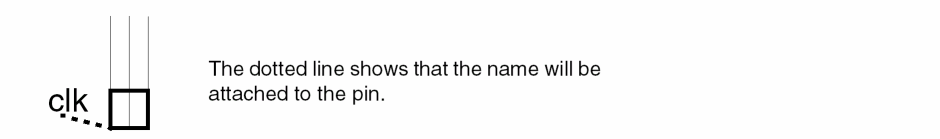
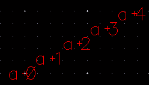
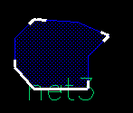
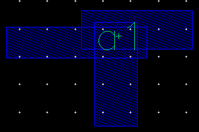
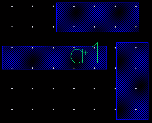
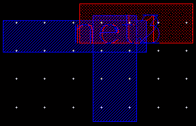
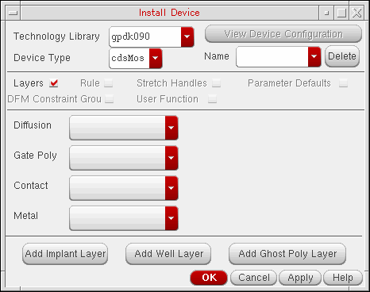

6
Creating Objects
This chapter contains these topics:
- Entering and Deleting Points
- How Creation Commands Work with ROD Objects
- Creating Rectangles
- Creating Polygons
- Creating an Arc
- Creating Paths
- Creating Circles
- Creating Ellipses
- Creating Donuts
- Creating Geometric Wires
- Creating Instances
- Creating Pins
- Creating Labels
- Creating Vias
- Creating Multipart Paths
- Creating Fluid Guard Rings
- Creating MPP Guard Rings
- Creating Slots
- Creating P&R Objects
- Creating Groups
Entering and Deleting Points
When you create objects, you enter and delete points to create the shape you want.
To enter points for a shape or wire:
To complete a circle, rectangle, ellipse, or a donut,
To complete a path, polygon, or wire:
Entering Points in the CIW
You can enter points by typing coordinates into the command interpreter window (CIW) as follows:
- Choose Create – Shape – Rectangle. You are prompted to enter the first corner of the rectangle.
-
Type a coordinate pair in the CIW. Use a colon to separate the coordinates and press
Enter. For example:-0.2:-9.0
-
When you are prompted for the opposite corner of the rectangle. Type another coordinate pair in the CIW and press
Enter. For example:0.5:20.0
If you are creating a polygon, enter the same coordinates again to indicate the last point.
Entering Points with the Keypad
You can use the keypad to move the pointer and to enter points. This can be helpful if, for example, you want to enter a point just a few units away from the last point.
Using the Enter Points Form
You can also use the Enter Points form to specify the points to create an object. This is especially useful when you want to create an object or a list of objects at specific coordinates in the design window.
- Choose Create – Shape – Rectangle.
-
Choose Tools – Enter Points.
The Enter Points Form opens.

-
Enter points in the XY field. For example:
(0 10) (20 30)
- Click OK.
A rectangle is created with (0 10) as the first corner and (20 30) as the corner that is diagonally opposite to the first corner.
You can also use the X, Y, dX, and dY fields on the status toolbar to specify the points to create an object. For more information, see Status Toolbar.
How Creation Commands Work with ROD Objects
The following tables summarize the level of support for how creation commands work on relative object design (ROD) objects in the current release. A ROD object contains information about the object, including its name and database ID.
Creating a ROD object lets you:
- Specify connectivity to associate the object with other objects on the same net by typing the net name in the Net Name field
- Give the object a ROD name by either using the default database name or typing another name in the ROD Name field
ROD names can have spaces in them. For example, rectangle 1a is a valid ROD name. Only one ROD object can be created and assigned to a net at a time. You cannot enter a series of names in the Net Name and ROD Name fields. Once the object is created, you can edit the object by typing ROD function commands in the CIW. These commands let you:
- Access ROD objects by name through all levels of hierarchy
- Access ROD objects’ handle values through all levels of hierarchy
- Align ROD objects to each other or to specific coordinates
- Assign names to unnamed rectangles, polygons, lines, and paths
- Create complex parameterized cells
See the Virtuoso Relative Object Design User Guide for information about ROD objects.
Using commands that are not fully supported for ROD objects could cause the objects to lose the ROD information associated with them, changing the objects into ordinary shapes.
| Create Command | Degree of ROD Support |
|
Create and name new rectangles as ROD objects using the Create Rectangle form. |
|
|
|
Create and name new polygons as ROD objects using the Create Polygon form. |
|
|
Create and name paths as ROD objects using the Create Path form. |
|
Create and name new multipart paths as ROD objects using the Create Multipart Path form. This form lets you choose a template from your technology file, load templates from an ASCII file, and save form values as a template in your technology file (if you have write permission) or in an ASCII file. |
|
|
|
You cannot create a label as a ROD object. However, you can make an existing label a ROD object by assigning it a name with the |
|
|
An instance is automatically a ROD object because it has a unique name. The ROD object name is the same as the instance name. |
|
|
Create and name new pins as ROD objects using the Create Pin form. |
|
You cannot create a pin from a label as a ROD object. However, you can make an existing pin a ROD object by assigning it a name with the |
|
|
Circles are supported as ROD objects. However, there is no user interface for naming a circle; use the |
|
|
Ellipses are supported as ROD objects. However, there is no user interface for naming an ellipse; use the |
|
|
Donuts are supported as ROD objects. However, there is no user interface for naming a donut; use the |
|
|
You cannot create a shape using a layer generation operation as a ROD object. However, you can make a generated shape a ROD object by assigning it a name with the |
Using the rodAutoName Environment Variable
You can use the environment variable rodAutoName to set system default values in the Create Pin, Create Rectangle, and Create Polygon forms to:
- Turn on Create as ROD object so all shapes are created as ROD objects
- Make the Name field editable, allowing you to either use the default name or type another name
The following example sets the Create Rectangle, Create Pin, and Create Polygon forms to create shapes as ROD objects. In the Command Interpreter Window (CIW), type:
envSetVal("layout""rodAutoName"'string"rectangle pin polygon")
To turn off Create as ROD object in one or all of the forms listed in the rodAutoName variable, do one of the following:
- Turn off Create as ROD object in any of the forms
-
Retype the
envSetValcommand, excluding the type of object you no longer want to create as ROD objects
For example, if you turn off Create as ROD object in the Create Polygon form, the following is true for rodAutoName:
envGetVal("layout""rodAutoName")"rectangle pin"
You can also set the rodAutoName variable in your .cdsenv file, so the layout editor defaults to the options you want at startup. The syntax to use in your .cdsenv file is:
layout rodAutoName string "rectangle pin polygon"
Creating Rectangles
The Create Rectangle command enables you to create rectangular shapes. By using this command, you can also create rectangles with slots.
- Select the layer you want from the Layers Panel.
-
Choose Create – Shape – Rectangle [
r]. -
Press
F3.
The Create Rectangle Form opens.
- In the Net Name field, type the name of the net you want the rectangle to be associated with.
-
Expand ROD and select the Create as ROD object check box if you want to create a ROD object rectangle; otherwise, the rectangle is created as a polygon.
In the Name field that now becomes editable, change the default rectangle name, if required. - Expand Slotting and select the Enable check box if you want create the rectangle with slots.
-
In the Layer list, select an LPP.
This list is available only if the Create as ROD object check box is selected in the ROD section. -
Specify Width/Length or Width/Area.
If you deselect Specify width, area, the text fields available are Width and Length. If you select Specify width, area, the Width and Area fields are available. - Specify the slot dimensions in the Width and Length or Width and Area fields.
- Specify the spacing in the Column, Row, and Edge fields.
- In the design display area, click to specify the first corner of the rectangle. Alternatively, you can specify the points of the rectangle using the Enter Points form. For more information, see Enter Points Form.
-
Click again to specify the corner that is diagonally opposite to the first corner that you specified.
You cannot create a rectangle with zero area. If you click twice at the same point to specify the two corners of the rectangle that you are creating, a warning message is displayed in the CIW.
If you are creating a rectangle with slots, ensure that you create a rectangle large enough to contain the slots with the specified dimensions; otherwise, slots are not created. Slots are added dynamically as you create the rectangle.
Creating Polygons
- Select the layer you want.
-
Choose Create – Shape – Polygon [
Shift-p]. Press F3 to open the form.
The Create Polygon Form appears. -
Choose a value from the Snap Mode cyclic field.
Snap Mode settings are illustrated here. If you chose an L90 mode, you can switch to the other L90 mode by clicking the middle mouse button. Keep clicking the middle mouse button to toggle between L90XFirst and L90YFirst.
- In the Net Name field, type the net name you want the polygon to be associated with.
-
If you want to create a ROD object polygon, select Create as ROD object.
The Name field becomes editable, allowing you to change the name from the default name that is displayed. If you do not change the name, the default name is assigned to the polygon. -
Click to enter points. As you enter each point, a dotted line shows how the layout editor will close the polygon if you stop at that point.
Alternatively, you can specify the points of the polygon using the Enter Points form. For more information, see Enter Points Form. -
Double-click to finish the polygon or click and press
Return.
Creating an Arc
- Select the layer you want.
-
Choose Create – Shape – Polygon [
Shift-p]. Press F3 to open the form.
The Create Polygon Form appears. - Click Create Arc in the form.
-
Click to indicate the start point, the end point, and a radius point on the arc. Alternatively, you can specify the points of the arc using the Enter Points form. For more information, see Enter Points Form.
If you have already entered some points of a polygon, the last point you clicked is the start point of the arc.
Creating Paths
- Select the layer on which you want to create the path from the Layers Panel.
- Choose Create – Shape – Path.
-
Press
F3.
The Create Path Form opens.
-
On the Path Options tab, in the Width field, type the width for the path.
The default path width is theminWidthfor the entry layer defined in the technology file. -
Select the Fixed Width check box if you want a fixed width for the path.
If this check box is selected, the specified width is applied to all the segments of the path, even when you change layers. -
In the Justification list, select the edge of the path you want to offset.
The path justification settings control where you can enter the points—along the centerline or along the edge of a path.
-
Type a value in the Offset field if you want to offset the path.
For example, if you type a value of0.5, the path is created at a distance of0.5microns from the points you enter.
-
Select the required end type for the path.
The path End Type settings change the shape and spacing of path ends. If you set the end type as variable, specify the Begin Extension and End Extension values.
- In the Net Name field, type the net name you want the path to be associated with.
-
Select the Create as ROD Object check box if you want to create a ROD object path; otherwise, the path is created as a polygon.
In the Name field that now becomes editable, change the default path name, if required. -
Select the Enable Metal Slotting check box if you want to create a path with slots.
This makes available the Slot Options tab. - Select a value from the Snap Mode list.
- Set Snap Mode to anyAngle and select the Acute Angle check box if you want to create paths with acute angles.
-
Click the Slot Options tab.

-
In the Slot Layer list, select an LPP.
This list is available only if the Create as ROD Object check box is selected on the Path Options tab. -
Select Width/Length or Width/Area.
If you select Width/Length, the text fields available are Width and Length. If you select Width/Area, the Length field is replaced with the Area field. - Specify the slot dimensions in the Width and Length or Width and Area fields.
- In the Between Slots, Between Slot Rows, Edge to Slot, and Stagger fields, specify values as required.
-
In the design display area, click to specify the path endpoints. Segments are created when you change the direction of the path.
Alternatively, you can specify the points of the path using the Enter Points form. For more information, see Enter Points Form. -
Double-click in the design display area or press
Enterto finish creating the path.
If the path you create is self-intersecting, every single-click after a self-intersection generates a message in the CIW, though you can continue to create the path. You can cancel the current and previous points by pressing theBackspacekey or finish creating the path by double-clicking or pressingEnter. If you double-click or pressEnter, the path is automatically truncated to a valid path. All the segments or points after the first intersection point are removed so that the remaining path shape is valid. A message appears in the CIW indicating the same.
Even if there are multiple intersection points, the path is truncated to the first self-intersection point, as shown below.
If you are creating a path with slots, ensure that you create a path wide enough to contain the slots with the specified dimensions; otherwise, slots are not created. Slots are added dynamically as you create the path.
You can also create slots on diagonal paths, as shown in the figure below. Slots are not created on anyAngle paths.
Slots are not supported in geometric wires created from paths. For creating a wire by using a path, see the Virtuoso Interactive and Assisted Routing User Guide.
Controlling the Display of Paths
You can display path borders and centerlines, borders only, or centerlines only.
-
Choose Options – Display [
e].
The Display Options Form opens. - Select one of the following from the Path Display list:
-
Click OK.
Creating Circles
- Select the layer you want from the Layers Panel.
- Choose Create – Shape – Circle.
-
Press
F3.
The Create Circle Form opens.
- Select the shape type for the circle that you want to create.
- You can specify the conic sides and radius for the circle.
-
Click where you want the edge of the circle.
Creating Ellipses
You create an ellipse by creating a rectangle that surrounds the ellipse.
- Select the entry layer you want.
- Choose Create – Shape – Ellipse.
- Click where you want the first corner of the ellipse. Alternatively, you can specify the points of the ellipse using the Enter Points form. For more information, see Enter Points Form.
-
Click where you want the opposite corner of the ellipse.
Creating Donuts
- Select the entry layer you want.
- Choose Create – Shape – Donut.
- Click where you want the center of the donut. Alternatively, you can specify the points of the donut using the Enter Points form. For more information, see Enter Points Form.
- Click where you want the inner edge of the donut.
-
Click where you want the outer edge of the donut.
Creating Geometric Wires
-
Choose Create – Shape – Geometric Wire.
The Create Geometric Wire Form opens. - Select Paths or Segments to create the wire.
- Fine-tune the width, justification, and begin and end style settings. Alternatively, you can specify the points of the wire using the Enter Points form. For more information, see Enter Points Form.
- Click or area select a pin, via, path, or wire to the layer and attributes.
- Continue to click at subsequent points of the wire.
- Press Return or double-click to end the wire.
For information about how to create wire interconnects, see
Creating Instances
An instance is a database object that represents a master cellview. You can have several instances of the same cellview in a design. The Create Instance command lets you place an instance of a cell into the current cellview.
To place a cell inside the current cellview,
-
Choose Create – Instance from the menu bar or click the Create Instance icon on the Create toolbar.
Alternatively, right-click at any free space in the design canvas to display the Layout context menu and select Create – Instance.
The Create Instance Form opens. - Fill in the Library, Cell, and View fields.
-
To override the automatic naming of instances, type one or more instance names in the Names field, leaving a space between names. By default, the layout editor automatically assigns names to instances, starting with
I1(Instance 1) and continuing withI2,I3, and so forth. If the instances are mosaics, the default names areM1,M2, and so forth. If you override the assigned name, the first name in the form is assigned to the first instance you place. The next name is assigned to the next instance you place, and so forth. You can use the Display Options form to display instance names in the cellview.
In case the design has EMH, you can specify the complete hierarchical path name (starting from the top module to the new instance to be created using the hierarchy delimiter in CDB name space) for specifying the location in EMH where the instance is to be created. An example of such a name ismodA‘modB‘15, where A and B are the names of the module instances and 15 is the name of the newly created instance. - Optionally, you can create a mosaic or array of instances by typing values in the Rows and Columns fields.
-
To change the spacing between the rows or columns, type values for Delta Y,X.
By default, the fields are set to the width and length of the original cell, so that the edges of each instance touch but do not overlap. - To create the instance as a physical only instance, click the Physical Only check box.
- To rotate instances click Rotate or, as you place the instance, click the middle mouse button.
-
To mirror the instance click Sideways, Upside Down. Alternatively, as you place the instance, press
Ctrland click the middle mouse button to mirror the instance Sideways or pressShiftand click the middle mouse button to mirror the instance Upside Down. - Click in the design window to place the instance. Alternatively, you can specify the points where you want to place the instance using the Enter Points form. For more information, see Enter Points Form.
Creating Pins
The Create Pin command lets you create pins in a cellview to connect the cellview to another cell in your design hierarchy. The Create Pin command also lets you define the connectivity of the pin, strong or weak, even while creating the pin. For defining or editing the connectivity of existing pins in the design, you can use the Connectivity – Pins command. Using the Connectivity – Pins command, you can define connectivity as strong connect, weak connect, must-join connect, or pseudo parallel connect. For more information about these connectivity types, see Overview of Pin Connectivity.
You can apply
To create pins, choose Create – Pin [Control-p] or click the Create Pin icon
on the Create
This topic covers the following:
For creating pins from labels, see Creating Pins from Labels.
Creating Strongly Connected Pins
- Click Create – Pin. This opens the Create Pin Form.
- Set Mode as Manual.
- Set Connectivity to Strong.
-
Specify one or more terminal names in the Terminal Names field. This is the name of the net to which the pin(s) to be created will connect. Separate multiple names with spaces. The behavior of the Terminal Names field depends on whether or not the Keep First Name is on. The following scenarios may occur when Keep First Name is off:
- If you specify a single name in the Terminal Names field, a single new terminal and pin are created. If the specified terminal already exists, a new pin is added to the terminal.
- If you leave the Terminal Names field blank, you are prompted to either specify a terminal name or to click an existing pin. If you click an existing pin, the terminal name of this pin populates the Terminal Names field in the form and a pin figure is added to the existing pin through strong connectivity.
- If you specify multiple names in the Terminal Names field, new terminals with the specified names are created if they do not already exist. New pins are created on each of the new terminals.
- Select Physical Only to create the terminal only in the block domain.
-
Select Keep First Name for adding multiple pin figures to the same pin shape on the same terminal. This option works in conjunction with the Terminal Names field. The following scenarios may occur when Keep First Name is on:
- If you specify a single name in the Terminal Names field, the behavior is the same when Keep First Name is off, that is, a new terminal and pin are created, if they do not already exist. Multiple pin figures can be added to this new pin shape.
- If you specify multiple names in the Terminal Names field, only a single terminal is created with the first specified name. Multiple pin figures are added to the same pin shape and they are strongly connected.
- Edit the X and Y Pitch values if required.
- Select Create Label check box to attach a label showing the terminal name to the pin. See Setting Pin Label Text Style Options for more information.
-
Select Create as ROD Object to create the pin figure as a ROD object; else, the pin figure is created as a polygon.
The Name field becomes editable, allowing you to update the name from the default that is displayed. The default name is derived based on the Mode you select. -
Set the Pin Shape.
When creating a rectangle, dot, polygon, or circle, the system prompts you to enter a point for the shape. To create a zero-size dot pin, click twice on the same point. - Select an I/O Type to indicate the direction of the signal into or out of the pin.
- If you are creating a polygon pin, set the Snap Mode cyclic field to limit how the pointer snaps to the pin.
- Select the Access Direction to specify the direction in which the routing tools can connect routing to the pin.
- In the layout window, click to create the pin.
- If you have selected the Create Label check box, click again to place the label on the pin figure.
- If you are creating multiple pins, continue to click to create and place pins and labels. If Keep First Name is not selected or you specified a single name in the Terminal Names field, specify a terminal name in the form or click an existing pin to pick the terminal name.
- Click Cancel in the Create Pin form or press Esc when you are done.
If you are creating multiple pins, pin figures are added to the same first specified terminal and the pin figures share the pin name. If you are creating a single pin, the pin is added to the specified terminal name. Pin names are auto-generated.
Creating Weakly Connected Pins
- Click Create – Pin. This opens the Create Pin Form.
- Set Mode as Manual.
- Set Connectivity to Weak.
- Select Must Connect All Pins to apply the LEF58_MUSTJOINALLPORTS property to all newly created pin terminals in the layout, which implies that the router must connect all pins of the selected terminal.
-
Specify one or more terminal names in the Terminal Names field. This is the name of the net to which the pin(s) to be created will connect. Separate multiple names with spaces. The behavior of the Terminal Names field depends on whether or not the Keep First Name is on. The following scenarios may occur when Keep First Name is off:
- If you specify a single name in the Terminal Names field, a single new terminal and pin are created. If the specified terminal already exists, a new pin is added to the terminal.
- You cannot leave the Terminal Names field blank. If you do, you are prompted to specify a terminal name.
- If you specify multiple names in the Terminal Names field, new terminals with the specified names are created if they do not already exist. New pins are created on each of the new terminals.
- Select Physical Only to create the terminal only in the block domain.
- Select Keep First Name to use the same specified terminal name for creating multiple pins. If multiple terminal names have been specified, the first specified terminal name is used for creating the terminal and all pins connect to the same net. If this option is not selected, you will be prompted to specify a terminal name for each of the multiple pins you create.
-
Select Keep First Name for creating multiple pins on the same terminal. This option works in conjunction with the Terminal Names field. The following scenarios may occur when Keep First Name is on:
- If you specify a single name in the Terminal Names field, the behavior is the same when Keep First Name is off, that is, a new terminal and pin are created, if they do not already exist.
- If you specify multiple names in the Terminal Names field, only a single terminal is created with the first specified name. Multiple pins are added to the same terminal and they are weakly connected.
- Edit the X and Y Pitch values if required.
- Select Create Label check box to attach a label showing the terminal name to the pin. See Setting Pin Label Text Style Options for more information.
-
Select Create as ROD Object to create the shape pin as a ROD object.
The Name field becomes editable, allowing you to update the name from the default that is displayed. The default name is derived based on the Mode you select. -
Set the Pin Shape.
When creating a rectangle, dot, polygon, or circle, the system prompts you to enter a point for the shape. To create a zero-size dot pin, click twice on the same point. - Select an I/O Type to indicate the direction of the signal into or out of the pin.
- If you are creating a polygon pin, set the Snap Mode cyclic field to limit how the pointer snaps to the pin.
- Select the Access Direction to specify the direction in which the routing tools can connect routing to the pin.
- In the layout window, click to create or place the pin.
- If you have selected the Create Label check box, click again to place the label on the pin.
- If you are creating multiple pins, continue to click to create or place pins and labels. If Keep First Name is not selected or you specified a single name in the Terminal Names field, you will be prompted to specify a terminal name in the form for each pin you create.
- Click Cancel in the Create Pin form or press Esc when you are done.
New pins are created on the same terminal, which are weakly connected. When Keep First Name is off, multiple terminals are created. The first name in the Terminal Names field is assigned to the first terminal, second name to the second terminal, and so on. Pin names are auto-generated.
Placing Pin Arrays
A pin array is one line of pins with a single origin. You might create such an array if you have many nets bundled together into a bus. The pins in the array are placed for every bit of the bus and are spaced according to the XPitch and YPitch coordinates.
-
Choose Create – Pin [
Control-p].
The Create Pin Form opens. -
In the Terminal Names field, type the net bus name as shown.
baseName<x:x>For example,NetA<0:5> - In the X Pitch and Y Pitch fields, type the horizontal and vertical pitch for the array.
- Move the pointer into the cellview window and place the first pin where you want to start the array. The rest of the pins are automatically placed at the designated X and Y locations for every bit of the bus. They are measured from the center point of the previously placed pin.
Examples of Pin Arrays with Different X and Y Pitch

Setting Pin Label Text Style Options
To specify pin name characteristics,
-
In the Create Pin form, select Create Label and click the Options button.
TheSet Pin Label Text Style Form opens. -
Select the font height and style.

- Select the text options.
- Select a valid layer name.
- Select a valid layer purpose.

-
Select the justification for the pin name origin.
The origin appears as a small square on the name when placed or selected. -
Select the orientation of the pin name.
Once the pin is placed, an outline of the pin name appears.

Support for Orthogonal WSP Grid
While creating a pin, orthogonal WSP grid constraint defined in the technology file automatically adjusts the pin with a variable extension value so that the begins and ends points of a pin are on the grid.
The constraint group is specified in the technology file as shown below.
constraintGroups(
;( group [override] [definition] [operator] )
;( ----- ---------- ------------ ---------- )
( "orthogonalWSPGridCG" nil nil 'and
spacings(
( orthogonalWSPGrid "Metal1" "M2WSP" )
( orthogonalWSPGrid "Metal2" "M5WSP" )
( orthogonalWSPGrid "Metal3" "M4WSP" )
) ;spacings
) ;orthogonalWSPGridCG
) ;constraintGroups
If the orthogonal WSP grid constraints are part of a specific constraint group, you can select the constraint group from the Default Wire Constraint Group field in the Wire Editing section of the Layout Editor Options form.
Creating Labels
You can identify objects or portions of your design by labeling the objects. This section covers the following topics:
- Configuring Label Creation Options
- Label Creation Methods
- Label Creation Modes
- Labelling Overlapping Shapes
Configuring Label Creation Options
-
Choose Create – Label [l].
The Create Label Form opens.
When you run the Create – Label command, the Create Label form opens if the last setting in the form was Manual. If the last selected mode was Auto, the Create Label form does not open, but you are prompted to click or select a shape to create labels. The label is not dropped at the pointer location if you start the Create Label command in Auto mode because this command is not affected by the Infix mode setting. -
Choose the method of generating labels.
If you select Auto and enable the From Interconnect tab, ensure that the selected objects have connectivity information. If you select Auto, configure the required settings on the From Interconnect and From Instance tabs. -
In the Label (Pattern) field, which is available only in the Manual mode, type the text string or the pattern for the label names.
See the examples of the pattern strings that can be specified in the Label (Pattern) field in Appendix A. - In the Label Layer/Purpose section, choose a layer and purpose for placing the label.
-
In the Label Options section:
-
From the Font list, choose a font for the label.
The figure below shows the available fonts. - In the Height field, specify a height for the label text.
-
From the Justification list, select the position of the label origin with respect to the label position.
The figure below shows the available options that you can select.
- Select the Drafting check box if you do not want the label text to be rotated by more than 90 degrees.
-
Select the Overbar check box if you want underscore characters in the label text strings or patterns to be displayed as overbars.
If the Overbar check box is off (default), the software displays underscore characters ( _ ) as part of the text string. If the Overbar check box is on, the software interprets underscore characters in the text string name as toggle switches that control where overbars begin and end. Overbars appear above the text string, as shown in the following examples.
- Select the Keep Label check box if you want the label or pattern specified in the Label (Pattern) field to be available after all the labels or the ones generated from a sequence have been used up.
- Select the Attach check box if you want to attach the label to an object.
- Select the Expand check box if you want to generate separate label names from the pattern specified in the Label (Pattern) field.
-
From the Font list, choose a font for the label.
-
In the Scan Line section:
- Select the Label Selected Objects check box if you want only the selected objects to be labeled while using the Scan Line Method.
- Ensure that the Auto Zoom Out check box is selected to enable automatic zooming and panning if the scan line extends beyond the current display area.
- In the Auto Step section, select the Step check box if you want labels to be created automatically with the fixed, specified distance between consecutive labels.
- Choose a value from the Snap Mode list to control the direction in which you can move the scan line while using the Scan Line Method and the Auto Step Method (Custom).
-
To rotate or mirror a label as you place it, set Drafting off, then click Rotate, Sideways, or Upside Down as required before placing the label.
Alternatively, you can click the middle mouse button to replicate Rotate, pressCtrland click the middle mouse button to replicate Sideways, or pressShiftand click the middle mouse button replicate Upside Down. Each time you click a button on the form or click the middle mouse button, the label is further rotated or mirrored. Click in the cellview to place the label.
After specifying various options in the Create Label form, as you move the pointer to the design display area, you see the ghost image of the label text in the Manual mode. This image represents how the label text will look when you place the label. The ghost image moves along with the pointer until you place the label. In the Auto mode, the ghost image of label text appears only when you hover the pointer over shapes that have connectivity information.
Label Creation Methods
To place the labels, you can use one of the following methods:
- Single-Click Method (available in Manual and Auto modes)
- Scan Line Method (available in Manual and Auto modes)
- Auto Step Method (available in Manual mode)
- Selection Method (available in Auto mode)
Single-Click Method
By using this method, you label the objects one by one.
-
With the label attached to the pointer, click the object you want to label and the label will be placed at the point of click.
Scan Line Method
By using this method, you label multiple objects in one go. This method is useful if the specified pattern in the Label (Pattern) field generates multiple labels in a sequence. For example, the label GDD will label only the first object even though the scan line may intersect more objects. The scan line assigns labels to only as many objects as the number of labels generated by the specified pattern. Consider the pattern A<0:2> with the Expand option selected. Three labels will be generated: A<0>, A<1>, and A<2>. If the scan line intersects five objects, only three of them will be labeled .
To generate labels by using the scan line:
- With the middle mouse button, click and drag the pointer to draw a line scanning across the objects you want to label.
-
Release the mouse button at the end point of the scan line.
Labels are placed at the intersection of the scan line and the objects. You can configure the direction in which you can move the scan line by setting the Snap Mode option, which is set to orthogonal by default.
Labeling Selected Objects
In the Manual mode, use the Scan Line method to label only the selected objects. You can select the objects before or after starting the Create – Label command.
-
Select the objects you want to label.
-
Choose Create – Label.
The Create Label Form opens. - In the Label (Pattern) field, type the label pattern.
- In the Scan Line section, select the Label Selected Objects check box.
-
With the middle mouse button, click and drag a scan line that intersects the selected and unselected objects.
-
Release the mouse button.
Only the selected objects are labeled.
-
Press
Escor click Cancel in the form to finish creating labels.
Only as many labels from the specified sequence in the Label (Pattern) field are used as there are selected objects.
In the Auto mode, you can similarly use the Scan Line method to label ed or post-selected objects with connectivity information and ed or post-selected instances.
Labeling Objects Out of the Design Display Area
In the scan line method, since you use the middle mouse button to draw the scan line, you cannot use the mouse scroll wheel to zoom in or zoom out of the design while creating the scan line. The Tab key is also unavailable to pan through the design. Therefore, in a scenario where there is a large number of objects to be labeled, some of which are out of the current display area, ensure that the Auto Zoom Out check box in the Scan Line section is selected. As you click and drag the scan line beyond one of the edges of the design display area (to allow the scan line to intersect objects currently not in view), the Auto Zoom Out option automatically zooms out the design to make the other objects to be labeled visible. As you continue to drag the scan line, the design keeps zooming out and panning automatically. When you release the middle mouse button to complete the scan line, the design returns to the original zoom level and labels are added to al objects that were intersected by the scan line. If you do not select this check box, no zoom out occurs, though the design pans as you drag the scan line beyond a design display area edge.
Auto Step Method
This method can be used only in the Manual mode.
To create labels by using the step method:
-
Choose Create – Label.
The Create Label Form opens. - In the Label (Pattern) field, type the label pattern.
- In the Auto Step section, select the Step check box.
-
From the Step list, if you select Input X&Y:
-
Specify values in the X and Y fields.
All the generated labels attach to the pointer and are visible as per the specified spacing. -
Click to place the labels.If the Keep Label check box in the Label Options section is selected, the label sequence remains attached to the pointer after you click to place the label.
-
Specify values in the X and Y fields.
-
From the Step list, if you select Custom:
The first label attaches to the pointer.- Set up the Snap Mode setting.
-
Click to place the first label in the design display area.
The remaining generated labels attach to the pointer, as shown below.You can move the pointer around to determine the position of the second label.
-
Click to place the second label.
The remaining labels are placed by using the same spacing as between the first and second placed labels and along the same direction as the first two labels.
-
Press
Escor click Cancel in the form to finish creating labels.
Selection Method
By using this method, you can fully or partially select the shape to be labeled , before or after starting the Create – Label command. This method works only in the Auto mode. Labels are generated for fully or partially selected shapes that have connectivity information or are instances.
Label Creation Modes
Manual Mode
Each generated label is placed with a click, at the click location. For example, if you specify A<0:3> in the Label (Pattern) field, the labels are incrementally generated from A<0> through A<3> and are placed one-by-one at the click location.
Attach: With the Attach option on, label is attached to the object you click. If there is no object at the click point, you will be prompted to click an object to attach the label to the object. When attaching a label to an object, a dashed line extends from the label to the object and disappears when you click the object.
Label (Pattern): As you place a single label or multiple labels generated from a sequence, they get consumed from the Label (Pattern) field. For example, if A1 B2 C<0:3> is the specified label pattern, after placing A1 and B2, the Label (Pattern) field displays only C<0:3>. The Label (Pattern) field shows C<0:3> until you place C<0> through C<3>. With the Keep Label option selected by default, the pattern specified is retained in the Label (Pattern) field and can be used to generate same set of more labels. If the Keep Label option is off, the Label (Pattern) field becomes empty after you place all the labels generated from the sequence, and you are prompted to specify a label text. You can specify the same or different label text.
Auto Mode
From Interconnect
From Instance
Label is generated based on the connectivity information of the object you want to label or from the instance name or instance master you want to label. Label is placed at the click location and is automatically attached to the object you are labelling.
Labeling Fully or Partially Selected Shapes: In the Auto Mode, you can or post-select the shapes to be labeled . In both the selection modes, you can select shapes either fully or partially. The full and partial scenarios described here are the same for both ion or post-selection modes.
-
Full Selection: The label (origin) is automatically placed at the center of the shape.
Ensure that the Full Select icon is selected on the Options toolbar. If not, pressF4to enable it.-
In the case of shapes such as rectangles, circles, and polygons, the label is placed at the center of the shape. In the case of a fully selected polygon, if the center of the polygon is outside the polygon, the label is placed on the midpoint of the longest edge of the polygon.

-
For a donut, the label is placed at the midpoint of the longest edge of a donut-equivalent polygon.

-
For pathsegs, the label is placed at the midpoint of the centerline.
-
For paths, the label is placed on the midpoint of the middle segment’s centerline.
-
In the case of shapes such as rectangles, circles, and polygons, the label is placed at the center of the shape. In the case of a fully selected polygon, if the center of the polygon is outside the polygon, the label is placed on the midpoint of the longest edge of the polygon.
-
Partial Selection: Ensure that the Partial Select icon
 is selected on the Options toolbar. If not, press
is selected on the Options toolbar. If not, press F4to enable it.
Partial ion or post-selection of a shape in the Auto mode labels the shapes in the following way:-
The label is placed at the midpoint of a selected edge.

-
With multiple selected edges, the label is placed at the midpoint of the longest selected edge. If two or more selected edges are of the same length, label is placed on the midpoint of a randomly selected same-length edge.
-
If multiple non-consecutive vertices are ed (no edge selected), the label is placed at the vertex closer to the midpoint of the shape.
-
If a combination of vertices and edges are selected, the label is placed at the midpoint of the longest selected edge.
- Partial selection of a path or pathseg places the label origin at the end of the selection.
-
The label is placed at the midpoint of a selected edge.
Labelling Overlapping Shapes
In the Manual Mode
-
Label Layer/Purpose = Use current entry layer or Select layer: If the click point or intersection point of scan line lies on overlapping shapes, a single label is created at the click or intersection point. The label is created on the layer-purpose pair that is the current entry layer in the Layers assistant or on the one that you select from the Select layer list. Single label string is consumed from the Label (Pattern) field.
Move the shapes to confirm that only one label is created.
 -
Label Layer/Purpose = Use same layer as shape, select purpose or Auto (Using stampLabelLayers section from technology file): If the click point or intersection point of scan line lies on overlapping shapes, multiple labels are created at the click or intersection point. One unique label is created on each layer-purpose pair. This is shown in the example below in which the Label Layer/Purpose is set to Use same layer as shape, select purpose. The two shapes in blue are on
metal1layer and the red shape is onmetal2layer.
If you move the shapes, you will notice that the labels are created on the same layers as shapes. However, since there are two shapes on
metal1layer, only one label is generated for the two shapes.

In Auto Mode
-
Label Layer/Purpose = Use current entry layer or Select layer: Separate labels are generated for overlapping shapes. The label name for each corresponds to the net name associated with the respective overlapping shape. Multiple labels with different label names overlap at the click location. The overlapping labels attach to the respective overlapping shapes by default. The labels are created on the layer-purpose pair that is the current entry layer in the Layers assistant or on the one that you select from the Select layer list.
Move the shapes to see that each shape has been labeled with its net name and all labels are created on the same layer-purpose pair.
If the shape you click or the shape that intersects the scan line does not have connectivity information, no label is assigned to the shape and a warning message is generated in the CIW.
-
Label Layer/Purpose = Use same layer as shape, select purpose or Auto (Using stampLabelLayers section from technology file): Separate labels are generated for overlapping shapes with the label names corresponding to the net name associated with the respective overlapping shapes. The labels are created on the same layer as the shapes if you select Use same layer as shape, select purpose, as shown below.
Move the shapes to see that each shape has been labeled with its net name and all labels are created on the same layer-purpose pair.

4 pixels, are not displayed in the design. To view small labels, you can set the drawSmallLabelOrigint.You can create and attach a label to an object inside a figgroup if you are in EIP mode or the transparent group option is ON. The scenarios to create and attach a label to an object inside a figgroup are listed below:
- If you create a label on an object inside the figgroup and attach it to the target object.
- If you click an empty area outside the figgroup and attach the label to a target object inside the figgroup.
Creating Vias
The Create Via command lets you connect objects on two layers within a cellview. This topic covers the following sections:
- Types of Vias
- Parameter Caching
- Installing a cdsVia Device in the Technology File
- Setting Up Via Creation Options
- Creating Vias Manually
- Creating a Via Automatically in Single and Stack Modes
- Setting the Technology to Create Via
- Parameter Caching
- Support for Voltage-Dependent Rules
Types of Vias
The various types of vias are OA standard, cds, syContact, Pcell, and fixed vias.
Vias are defined in the viaDefs section of the technology file. The types of via definitions are:
-
Standard via definition (
standardViaDefs) -
Custom via definition (
customViaDefs) -
Standard via variant (
standardViaVariants) -
Custom via variant (
customViaVariants)
Vias must exist in the technology file in order for them to appear in the Via Definition cyclic field in the Create Via form. In both the Create Via and the Edit Via Properties forms, viaDefs are listed in the order as they are defined in the validVias list in the technology file.
For information about adding customized vias to the technology file, see
Parameter Caching
When you first open the Create Via form, the parameter values for the respective viaDefs are seeded in the form from the technology database values, based on the values specified in the Create Via section in the Layout Editor Options form.
While creating a via or via stack, you can change the parameter values for a viaDef. If you successfully create a constraints-valid via or via stack using the updated parameters, the parameter set is cached for that viaDef. The next time you access the form in the same virtuoso session with the same viaDef and layer/width values, the cached parameter set is used. Each time you create a via with a different viaDef or different parameter values, the cache is created or updated, respectively.
The cached parameter values are validated against existing constraints before you can use the parameter set to create a via or via stack. If the parameters are not valid, they are recalculated based on enclosure calculation settings.
Similarly, if while creating a via, you manually update the enclosure values in the Create Via form, the values are cached if they comply with the minimum rules. The manually specified enclosure values are not re-calculated when you update other viaDef parameters, as long as the enclosure values do not violate the minimum rules.
Installing a cdsVia Device in the Technology File
To install a cdsVia device in the technology file by using the Install Device form:
-
In the CIW, choose Tools – Technology File Manager.
This opens the Technology Tool Box.
-
In the Utilities section, click Install Device.
This opens the Install Device form.
 -
From the Technology Library list, select the technology library in which you want to create the
cdsViadevice. - From the Device Type list, select Via.
- In the third section of the form, select the cdsVia option.
-
In the first section, in the Name field, specify the name of a new via device or select an existing via device from the list.
For the purpose of an example, specify the name ascdsViaM1M2.
The form updates, as shown below.
- In the second section of the form, with the Layers check box selected, select the required layers in the Layer 1, Contact, and Layer 2 lists. As an example, set the following:
-
In the second section of the form, select the Rule check box.
Ensure that all fields are populated with values.
Notice that when you select Rule check box, the Rules Browser window opens. If you place the pointer in any field, an arrow in the Rules Browser window indicates the physical area where the rule applies, as shown below.
-
In the second section of the form, select the Parameters check box.
Ensure that all fields are populated with values. The Abutment Class field is optional for acdsViadevice.
-
Click the OK or Apply button.
If you click Apply, a message appears in the CIW to let you know if there are any errors or whether thecdsViadevice has been created. If thecdsViadevice already exists in the technology file, you are prompted to confirm if you want to overwrite the existingcdsViadevice.
If you click OK, in addition to the message that appears in the CIW, you are prompted to confirm if you want to save the technology library to the disk. If you click Yes, the Install Device form closes.
You can check the DEVICES section in the technology file to confirm that the cdsVia device has been defined as per the values specified in the Install Device form.
To make the installed cdsVia device available in the Create Via form, you need to add the cdsVia device to the validVias constraint of the required constraint group in the technology file. You can do this by manually editing the technology file and then reloading it or by using the Process Rule Editor to edit the technology file. For information about editing the technology file by using the Process Rule Editor, see Adding the cdsVia Device to the validVias Constraint.
Adding the cdsVia Device to the validVias Constraint
You can add the cdsVia device to the constraint group that contains the purpose-aware rules. For example, the user-defined LPPtestCG constraint group contains the following purpose-aware minWidth and minSpacing rules.

To edit the technology file by using the Process Rule Editor:
-
In VLS XL or higher tiers, choose Window – Assistants – Constraint Manager.
The Constraint Manager assistant opens. -
Click the Process Rules Editor icon
 .
.
The Process Rules Editor window opens.
- In the Process Rules on section, select the Tech option.
- In the Browser section, expand the constraint group to which you want to add the cdsVia.
- In the bottom section of the Process Rule Editor, click the Value tab.
-
Scroll to select the installed cdsVia device, as shown below.
- Click Update.
- Click Close.
In the above example, the cdsViaM1M2, cdsViaM2M3, and cdsViaM3M4 cdsVias are added to the validVias constraint in the LPPtestCG constraint group, as shown below.
To instantiate the installed cdsVia device in your design, see Creating a cdsVia.
Setting Up Via Creation Options
Before creating a single, stack, or auto via, you can set up the viaDefs to be available for via creation. To set up the via creation options:
-
Choose Create – Via or click the Create Via icon
 on the Create toolbar.
on the Create toolbar.
This opens the Create Via Form.
-
Click the Options button. This button is available in all the three modes: Single, Stack, Auto.
This opens the Create Via Options Form.
- Select the Override Variant Parameters check box to allow the update of via variant parameter values.
-
Select the Extend Enclosure Beyond Overlap check box if you want the via enclosures to extend beyond the overlap region of the intersecting shapes.
In the Single and Stack mode, use this check box along with selecting the Compute From Shape(s) check box on the Create Via form. For more information about the Compute From Shape(s) check box, see Creating a Via Automatically in Single and Stack Modes. - Select the Fill Overlap With Enclosures if you want the via enclosure to extend and cover the complete overlap region between two intersecting shapes in the Auto mode.
- From the Cut Class list, select the cut class you want to be available by default for the respective viaDef/via variant in the Single mode. The selected cut class is also used by the Stack and Auto automatic via creation engines.
- From the Via Definitions list, select a viaDef/via variant for each layer pair. The selected viaDef/via variant is also used by the Stack and Auto automatic via creation engines.
Creating Vias Manually
You can create vias manually, using the single and stack via modes described in this section:
Creating a Single Via
Use the Single mode option on the to place a via in a cellview. By default, in the Single mode, the via width, length, row and column spacing, and the enclosure values are derived based on the calculation mode set in the Via Parameters Calculation Mode list on the Layout Editor Options Form. For standard and custom vias, you can update values for origins, enclosures, and via arrays by using the System tab on the form. See Creating a Via with Arrayed Via Cuts.
Creating a Via with Arrayed Via Cuts
An array of vias is a group of vias with a single origin. You can create such an array to connect two wide paths or to create part of a large transistor. To create a cdsVia, see Creating a cdsVia.
To place a standard or custom via with arrayed via cuts:
-
Choose Create – Via or click the Create Via icon
 on the Create toolbar.
on the Create toolbar.
Alternatively, right-click at any free space in the design canvas to display the Layout context menu and select Create – Via.
The Create Via Form opens. -
Select Single as the Mode for creating vias.
- Click the Options button to set up the default viaDefs to be available during the via creation and to enable overriding of the via variant parameters. For more information, see Setting Up Via Creation Options.
- To associate the via to a particular net, type the name of the net in the Net Name field.
- To create the via as a ROD object, select Create as ROD Object. Specify a name for the via ROD object in the Name field.
-
Next, select a viaDef or a via variant from either the Via Definition list or the Via Definition Selection widget (open by clicking Filter button).
-
To use the selection widget, click the Filter button to open the Via Definition Selection widget.
- Specify a search expression in the Filter field using wild card characters.
- Select a Sort By mechanism.
- Select the layers in From and To drop-down lists for specifying the layers between which the viaDef or via variant should be available.
-
Select one of the filtered viaDefs or via variants from the list box. The via variants are listed as child nodes of the parent standard or custom viaDefs. Press
Escif you do not want to select a viaDef from the list box.
The Via Definition Selection widget closes and the selected viaDef or via variant displays in the Via Definition cyclic field. The Via Type / Technology Library read-only field updates to show whether the selected viaDef is a standard or custom viaDef or is a standard or custom via variant and the name of the technology library in which the viaDef is defined. -
To use the selection widget, click the Filter button to open the Via Definition Selection widget.
- To work with a via variant, see Creating or Updating a Via Variant.
- On the System tab, click Reset Parameters to if you want to revert to the default values. The reset value you select depends on whether or not Compute Enclosures is on. For information about various reset values, see Appendix A.
-
Choose a Justification setting to change the via origin.
When set tooffset, X and Y are editable and display the offset in the X and Y direction, respectively. -
If the
‘cutClassparameter is specified in theviaSpacingrule, select a cut class or a cut size from the Cut Class cyclic field.
If a cut class for the viaDef/via variant in the Via Definitions cyclic field is set up in the Create Via Options Form, the value is selected by default in the Cut Class cyclic field in the Create Via form. - Specify values for Width and Length for the via cuts. If you select a Cut Class, Width and Length become non-editable.
- Update the number of Rows and Columns, if required.
-
Specify new values for Row Spacing and Column Spacing if you want to change the spacing between the center of each via cut.
-
In the design window, click where you want to place the via array.
 If the size of a via cut is not an even number of the manufacturing grid unit, the via cannot be centered around the origin. In such a case, the via origin is changed to ensure that via cut shapes are on grid. The via cuts are shifted (up for vertical adjustment and right for horizontal adjustment) by an offset of half of manufacturing grid.
If the size of a via cut is not an even number of the manufacturing grid unit, the via cannot be centered around the origin. In such a case, the via origin is changed to ensure that via cut shapes are on grid. The via cuts are shifted (up for vertical adjustment and right for horizontal adjustment) by an offset of half of manufacturing grid. - Place as many vias as required.
Creating a cdsVia
You can create a cdsVia in your design after installing the cdsVia device in the technology file. For more information, see Installing a cdsVia Device in the Technology File.
To create a standard or custom via, see Creating a Single Via and Creating a Via with Arrayed Via Cuts.
-
Choose Options – Editor.
This opens the Layout Editor Options Form. - In the Create Via section, ensure that the required constraint group is selected in the Via list.
-
Choose Create – Via.
This opens the Create Via Form. - Select Single as the Mode for creating the cdsVia.
-
From the Via Definition list, select a cdsVia.The Purpose section is added to the Create Via form if you select a cdsVia from the Via Definition list.Notice the Cut section where Width and Length fields are set to
0.3, and the Row Spacing and Column Spacing fields are set to0.2. In the Purpose section, the Cut purpose is set to . Therefore, these values are getting populated from the following rule in the constraint group:
-
In the Purpose section, select lowVoltage from the Cut list.
The Width, Length, Row Spacing, and Column Spacing values are automatically re-calculated, as shown below.
These values are picked from the following entries in theLPPtestCGconstraint group:
-
Click the Show Enclosures button
Notice that the enclosure values update automatically depending on the purpose you select from the Cut list in the Purpose section and based on the following entries in theLPPtestCGconstraint group:
- In the design window, click where you want to place the cdsVia.
- Place as many vias as required.
- Press Esc or click Cancel in the Create Via form to finish creating cdsVias.
The parameters supported by the via engine for cdsVia are:
rowParamName_ = "row";
columnParamName_ = "column";
widthParamName_ = "cutLayerW";
lengthParamName_ = "cutLayerL";
spacingXParamName_ = "xCutSpacing";
spacingYParamName_ = "yCutSpacing";
originParamName_ = "origin";
layer1XDefParamName_ = "layer1XDefOverride";
layer1YDefParamName_ = "layer1YDefOverride";
layer2XDefParamName_ = "layer2XDefOverride";
layer2YDefParamName_ = "layer2YDefOverride";
layer1XEncParamName_ = "layer1XEnclosure";
layer1YEncParamName_ = "layer1YEnclosure";
layer2XEncParamName_ = "layer2XEnclosure";
layer2YEncParamName_ = "layer2YEnclosure";
layer1DirParamName_ = "layer1Direction";
layer2DirParamName_ = "layer2Direction";
The parameters supported by the via engine for customVia are:
rowParamName_ = "row";
columnParamName_ = "column";
widthParamName_ = "w";
lengthParamName_ = "l";
spacingXParamName_ = "xCutSpacing";
spacingYParamName_ = "yCutSpacing";
pitchXParamName_ = "xPitch";
pitchYParamName_ = "yPitch";
originXParamName_ = "xBias";
originYParamName_ = "yBias";
layer1XDefParamName_ = "layer1XDefOverride";
layer1YDefParamName_ = "layer1YDefOverride";
layer2XDefParamName_ = "layer2XDefOverride";
layer2YDefParamName_ = "layer2YDefOverride";
layer1XEncParamName_ = "layer1XEnclosure";
layer1YEncParamName_ = "layer1YEnclosure";
layer2XEncParamName_ = "layer2XEnclosure";
layer2YEncParamName_ = "layer2YEnclosure";
layer1DirParamName_ = "layer1Direction";
layer2DirParamName_ = "layer2Direction"
Creating a Stack Via
You can create a via stack by physically stacking vias belonging to adjacent layers on top of each other. The footprint of each via in the via stack matches the footprint of the top via layer. This ensures that the metal shapes across all vias in the via stack coincide. Vias in a via stack have the same origin. If a via stack has connectivity, all vias in that via stack have the same net name.
By default, in the Stack mode, the via width, length, row and column spacing, and the enclosure values are derived based on the calculation mode set in the Via Parameters Calculation Mode list in the Layout Editor Options Form.
You can use via variants for creating a via stack. Such via stacks can be edited by using both the Edit Via Properties form and the Property Editor assistant.
In the following example, the figure on the left-hand side is an M5M9 via stack created using the Create Via form’s Stack option. The figure on the right-hand side shows the constituent vias M5M6, M6M7, M7M8, M8M9 of the via stack.
-
Choose Create – Via or click the Create Via icon
 on the Create toolbar.
on the Create toolbar.
Alternatively, right-click at any free space in the design canvas to display the Layout context menu and select Create – Via.
The Create Via Form opens. -
Select the Stack option.
The lower portion of the form updates to display the Start Layer and End Layer drop-down lists.
- Click the Options button to set up the default viaDefs to be available during the via creation and to enable overriding of the via variant parameters. For more information, see Setting Up Via Creation Options.
- Specify the Net Name of the net you want to associate with the via stack. If the specified net does not exist, a new net is created. If you leave this field blank, no net is associated with the via stack.
- To create the via stack as a ROD object, select Create as ROD Object. You can specify a name in the Name field.
- To work with a via variant, see Creating or Updating a Via Variant.
-
In the Start Layer and End Layer drop-down lists, select the layers between which you want to place the via stack. After you specify both Start Layer and End Layer values, the form updates to display all the vias available between the two selected layers.
- Specify the number of Top Rows and Top Columns you want in the via stack.
-
Select a viaDef for each layer pair from the Via Definitions drop-down list.
For each viaDef you select, the Via Type / Source column displays the type of viaDef it is - standard or custom - and the technology library where the selected viaDef is defined. - Click in the design where you want to place the via stack.
-
To rotate or mirror the via stack as you place it, click Rotate, Sideways, or Upside Down and then place the via stack. After placing the via stack, each time you click any one of these buttons or click right, the via stack is further rotated or mirrored.
Other Methods of Creating a Via Stack
You can create a via stack using any one of the following:
- Create – Wire command while switching from one routing layer to a non-adjacent routing layer
- Auto option on the Create Via form on two intersecting and non-adjacent routing layers
- Single option on the Create Via form and stacking the vias manually
Creating or Updating a Via Variant
- In the Create Via Form, select the Mode as Single.
- In the Via Definition cyclic field, select a standard or custom viaDef.
- On the System tab, change one or more via parameters, such as number of rows and columns, cut spacing, offset, or justification, as required.
-
Click the Save Via Variant button.
This opens the Save Via Variant Form. - Choose where to save the via variant, either in the Technology Library or in the Design. If you want to save the via variant in the technology library, select one from the drop-down list.
- In the Save as field, specify a name for the via variant.
- Review the updated parameters in the Summary read-only list box.
-
Click OK.
If you specify an existing viaDef name, a message in the CIW informs you that a viaDef with the specified name already exists. To specify a different name for the via variant, follow steps 4 to 8 and specify a different name for the via variant.
The created via variant appears in the Via Definition cyclic field as a child node of the selected parent viaDef. - Click the + sign to expand the node and select the saved via variant.
To update an existing via variant:
- In the Create Via Form, select the Mode as Single.
-
Click the Options button.
This opens the Create Via Options Form. -
Ensure that the Override Variant Parameters check box is selected.
- Click OK.
- In the Via Definition cyclic field in the Create Via form, select a standard or custom via variant.
- On the System tab, change one or more via parameters, such as number of rows and columns, cut spacing, offset, or justification, as required.
-
Click the Save Via Variant button.
This opens the Save Via Variant Form. - Choose where to save the via variant, either in the Technology Library or in the Design. If you want to save the via variant in the technology library, select one from the drop-down list.
- In the Save as field, specify a name for the via variant or select from the cyclic field.
- Review the updated parameters in the Summary read-only list box.
-
Click OK.
- If you specify the same name as that of an existing via variant name, a message box appears to confirm whether you want to overwrite the existing via variant. You can click Yes or No on the message box to specify your choice. The via variant is not updated if you click No.
- If you create a via variant that has the same viaDef and parameters as another existing via variant with a different name, a message box appears to confirm whether you want to rename the existing via variant. You can click Yes or No on the message box to specify your choice. The via variant is not renamed if you click No.
The updated via variant appears in the Via Definition cyclic field as a child node of the selected parent viaDef. - Click the + sign to expand the node and select the saved via variant.
Creating a Via Automatically in Single and Stack Modes
Use the Compute From Shape(s) check box to generate vias automatically in the Single or Stack modes when you click the overlap region of intersecting shapes.
-
Choose Create – Via or click the Create Via icon on the Create toolbar.
Alternatively, right-click at any free space in the design canvas to display the Layout context menu and select Create – Via.
The Create Via Form opens. - Click the Options button to set up the via creation options. For more information, see Setting Up Via Creation Options.
-
Select the Mode for creating vias.
-
If you select Single, do the following:
i) Select the Compute From Shape(s) check box.
Notice that the fields for specifying the Cut Class, cut Rows and Columns, and enclosure values are grayed out.
ii) Select a viaDef from the Via Definition cyclic field.
Note: Ensure that the selected viaDef matches at least one of the two intersecting shapes for generating the automatic via.
iii) In the Cut section, specify the Width, Length, Row Spacing, and Column Spacing values. -
If you select Stack, do the following:
i) Select the Compute From Shape(s) check box.
Notice that the fields for specifying Top Via Rows and Top Via Columns are grayed out.
ii) Select the start and end layers for creating the via stack.
iii) Select a viaDef for each layer pair from the Via Definition drop-down list.
-
If you select Single, do the following:
-
Click in the overlapping area of the intersecting shapes to create a via/stacked via.
The figures below show an example of a Single via created at the intersection of two shapes when the Compute From Shape(s) check box is selected. The vias in the first figure are generated when the Extend Enclosure Beyond Overlap check box is not selected in the Create Via Options Form. The second figure illustrates the enclosure extension when the Extend Enclosure Beyond Overlap check box is selected.

- You can continue to place vias at the required locations.
-
Press
Escor click Cancel on the form to finish creating vias.
A statistics report is generated for auto via in the form of a table in the CIW. This report is best visualized when the default CIW font is mono. A sample report is displayed below.
virtuosoDefaultExtractorSetup constraint group. For more information, see Specifying Layer-Purpose Pairs in the validLayers Constraint.Creating a Via Automatically on Intersecting Shapes
You can automatically place a single via or a stacked via in the overlap area of intersecting polygons, rectangles, paths or path segments. The via is created if there are available valid vias in the current constraint group in the technology database that connect the two layers on which the shapes exist. If there is a taper type constraint in the constraint group in the technology database, the vias are added to the valid vias list. When you place vias with Auto option selected, the via origin snaps to the center of the overlap, irrespective of the Snap Spacing settings in the Display Options form.
-
When a via is created in Auto mode or when the Compute From Shape(s) option is selected in the Create Via form, by default the Minimum Rules calculation mode is applied. However, you can change the calculation mode by setting the
createViaAlwaysUsesDefinedCalcModeenvironment variable totrue. - The auto via mode supports polygonal overlaps. If a non-metal via is created in a polygonal overlap, such a via is non-editable. In case the overlap area is a path or path segment, the via is created in every path or path segment subpart.
- When shapes abut, the auto via mode creates a via only when the shapes are path or path segment and when they are connected by their begin or end center line point.
M1, M2, and M4 shape at the same location, the auto via mode considers two different overlaps, M1-M2 and M2-M4. lt does not consider M1-M4 as an overlap, unless M2 is not visible in the Palette assistant.By default, in the Auto mode, the via width, length, row and column spacing, and the enclosure values are derived based on the calculation mode set in the Via Parameters Calculation Mode list in the Layout Editor Options Form.
By using the Auto option, you can do the following:
- Automatically Placing a Via with a Single Click
- Automatically Placing a Via Based on Connectivity Information of the Intersecting Shapes
Auto vias cannot be created at the click point within an intersection area if one of the following is true:
-
No valid via or constraint group is defined in the technology file for connecting the intersecting layers.
You can either edit the technology file to include the definition for vias connecting the intersecting layers or change the layers of the intersection objects to match a via defined in your technology file.
An appropriate warning message will be issued in the CIW in each of the above cases.
Automatically Placing a Via with a Single Click
-
In the Create Via Form, select the Auto option.
- Click the Options button to set up the default viaDefs to be available during the via creation and to enable overriding of the via variant parameters. For more information, see Setting Up Via Creation Options.
- To associate the via to a particular net, type the name of the net in the Net Name field.
-
Click in the overlapping area of the intersecting shapes.
The figures below illustrate a few cases of auto via generation.

For polygons or pathsegs, the coverage and cuts between vias are always same, irrespective of where you click in the shape.
- Continue to place vias at the required locations, if needed.
-
Press
Escor click Cancel in the form to complete creating vias.
Automatically Placing a Via Based on Connectivity Information of the Intersecting Shapes
- In the Create Via Form, select the Auto option.
- Click the Options button to set up the default viaDefs to be available during the via creation and to enable overriding of the via variant parameters. For more information, see Setting Up Via Creation Options.
-
Select the Check Shape Connectivity check box.
The Net Name field is removed from the form.
- (Optional) To place the vias on only those intersecting shapes that belong to a specific net, enter the particular net name in the Only for Specified Net(s) field.
-
Click in the overlapping area of the intersecting shapes. Alternatively, drag the middle mouse button to select the intersecting shapes.
A via is placed in the intersecting area based on the connectivity information of the intersecting shapes. - You can continue to place vias at the required locations.
-
Press
Escor click Cancel in the form to complete creating vias.
Auto and Fast Edit Mode Options
In the auto and fast edit via creation modes, you can use the Prevent DRC Violations With Neighbors option to prevent the creation of a via if it introduces DRC violations with the neighboring shapes. If this option is not selected, the via is created even if it introduces DRC violations with the neighboring shapes.
The example below depicts auto via creation using the Prevent DRC Violations With Neighbors option.
When the Prevent DRC Violations With Neighbors option is not selected, the auto via is created even though it introduces a DRC violation. This is depicted in the figure below.
When the Prevent DRC Violations With Neighbors option is selected, the auto via is not created as it introduces a DRC violation. A shaded via and (DRC ERROR) label are displayed on the canvas.

In the auto and fast edit via creation modes, you can also use the Show Preview option to preview of the via that will be created as shown in the figure below.
You can use the Show Hints option to display the Auto Via Preview Bindkeys hint box on the canvas.

Locking the via captures the number of rows/columns along with the cutClass.

The figure below shows the lock/unlock via option when the via preview is not displayed.

In the example below, create via command is invoked in auto mode. If you press the Spacebar key when the pointer is over an existing via, the via parameters of the existing via are locked, as shown in the figure below.
You can then draw an area using the middle mouse button to drop the vias on the other overlaps, as shown in the figure below.
The vias that are dropped have the same parameters as the via that has been locked.

Setting the Technology to Create Via
This section describes the aspects related to the technology setup needed for creating via.
- Specifying the Calculation Modes for Via Parameters
- Supported Parameters for Custom Via
- Specifying viaEngineContext User Type
- Supported Constraints
- Installing a cdsVia Device in the Technology File
Specifying the Calculation Modes for Via Parameters
You can set the calculation mode for via parameters to one of the following using the Via Parameters Calculation Mode option in the Layout Editor Options form:
-
Min Rules & ViaDef: For all the via parameter fields, such as the number of cut rows and columns, and cut sizes, the minimum rule or the viaDef default values, whichever is greater, are used. If minimum rules are not defined, viaDef defaults are used. The spacing and enclosure values are calculated automatically from the minimum rules. The minimum rules are picked from the constraint group that you select from the Via list in the Create Via section. The calculated values for the spacing and enclosure fields are never less than the viaDef defaults.
For example, if theminExtensionDistancerule is0.05and the default enclosure in viaDef is0.1,0.1is used as the enclosure value in the Create Via form. Similarly, if theminSpacingrule is0.2and the default cut spacing in viaDef is0.18,0.2is used as the cut spacing X and Y in the Create Via form. -
Minimum Rules: For all the via parameter fields, only the minimum rules, such as
minWidthandminSpacing, are used.
For example, if theminExtensionDistancerule is0.05and the default enclosure in viaDef is0.1,0.05is used as the enclosure value in the Create Via form. The viaDef default enclosure value is ignored. - ViaDef Defaults: For all the via parameter fields, viaDef defaults are used.
Supported Parameters for Custom Via
The parameters supported by the via engine for customVia are:
Specifying viaEngineContext User Type
When you call pre or post viaEngine callback function, the viaEngineContext userType is specified. The following example, depicts the usage of userType information.
procedure(myPreViaEngineCB(veCxt)
printf("call pre viaEngine procedure with context '%s' and viaDef '%s'.\n" veCxt->operationType veCxt->viaModel->viaDef->name)
printf("overlapInfo is: ")
println(veCxt->overlapInfo)
t
)
viaRegisterPreViaEngineCallback(“myPreViaEngineCB”)
When creating a via in single via mode, the output of the above-listed callback function is:
\o call pre viaEngine procedure with context 'check' and viaDef 'M3_M2'.
\o overlapInfo is: nil
When creating a via in auto via mode, the output of the above-listed callback function is:
\o call pre viaEngine procedure with context 'generate' and viaDef 'M1_PO'.
\o overlapInfo is: ((((0.25 -4.0) (0.25 1.0) (-0.25 1.0) (-0.25 -4.0)) "Metal1" "drawing" "bottom to top" 0.5) (((1.0 -1.0) (1.0 2.0) (-1.0 2.0) (-1.0 -1.0)) "Poly" "drawing" "vertical" 2.0) ((-0.25 -1.0) (0.25 1.0)))
\r t
In the above example, the value, 0.5, means that the first involved shape on "Metal1" "drawing" has a width of 0.5. The value, 2.0, means that the second involved shape on "Poly" "drawing" has a width of 2.0.
And the intersection of the two shapes gives the following overlap box:
((-0.25 -1.0) (0.25 1.0))
Supported Constraints
Create Via (Single), Edit Via Properties (single via), and Property Editor assistant for vias use technology library constraints and constraint groups to adjust via creation and editing to adhere to the following constraints:
-
minCutClassSpacing (One layer)
spacingTables( ( minCutClassSpacing "Via1" ( ( "cutClass" (Via1_Small (Via1_Bar 'shortEdge) (Via1_Bar 'longEdge) Via1_Large) nil "cutClass" nil nil ) 'paraOverlap -1 0.100 ) ( ((Via1_Small 'shortEdge) (Via1_Small 'shortEdge)) (0.134 'centerToCenter) ((Via1_Small 'shortEdge) (Via1_Small 'longEdge)) (0.134 'centerToCenter) ((Via1_Small 'shortEdge) (Via1_Bar 'shortEdge)) 0.100 ((Via1_Small 'shortEdge) (Via1_Bar 'longEdge)) 0.100 ((Via1_Small 'shortEdge) (Via1_Large 'shortEdge)) 0.080 ((Via1_Small 'shortEdge) (Via1_Large 'longEdge)) 0.080 )
);minCutClassSpacing
);spacingTables
-
viaSpacing (distance between the cuts of a via)
The value of the distance parameter in the viaSpacing constraint is used as a less than (<) rule.spacings( (viaSpacing "via" 'distance 1.1 'numCuts 2 'centerToCenter 'exceptSamePGNet 'sameVia 'exactAligned 3 'cutClass "viaCutClass.2.8" 'exactSpacing 'sideParaOverlap 2.2)) )
-
forbiddenCutClasspacingRange
spacings(
( forbiddenCutClassSpacingRange Via1 'cutClass (0.3 0.4)
'shortEdge("[0.07 0.09]")
)
-
minEndOfLineEdgeExtensionorderedSpacings( ( minEndOfLineEdgeExtension "V1" "M2" 'cutClass "viaCutClass.2.8" 'jointWidth 0.14 'spanLength 0.2 0.04 ) ); orderedSpacings
-
minCenterlineExtension
orderedSpacings( ( minCenterlineExtension "VIA1" "METAL1" 'cutClass (0.3 0.4) 'maxEffectiveWidth 0.2 'endOfLineWidthRange (0.1 0.2) 'distanceWithin 0.7 'exactWidth 0.2 ) ); orderedSpacing
-
minNumCut
spacingTables( (minNumCut "
via2" (("width" nil nil) 'cutClass "viaCutClass.2.8" 'above) ( 1.0 2 2.0 6 4.0 8 ) ) ... ) -
minEdgeAdjacentLength, which applies when a via has an edge of less than a specified length. The edges adjacent to this edge must be at least the length specified by the constraint.
spacings(
minEdgeAdjacentLength metal1 'maxLength 0.6 (1.0 1.2)
)
-
minExtensionDistance
orderedSpacings( (minExtensionDistance "metal1" "metal2" 1.0 … )
-
minOppExtension (scalar and table-based)
Scalar:orderedSpacings( ( minOppExtension "Metal1" "Via1" 'cutClass Via1_Small (0.0 0.03) ) ( minOppExtension "Metal1" "Via1" 'cutClass Via1_Bar 'endSide (0.04 0.0) ) ( minOppExtension "Metal1" "Via1" 'cutClass Via1_Large 'endSide (0.05 0.0) ) ( minOppExtension "Metal2" "Via1" 'cutClass Via1_Small (0.0 0.03) ) ( minOppExtension "Metal2" "Via1" 'cutClass Via1_Bar 'endSide (0.04 0.0) )
( minOppExtension "Metal2" "Via1" 'cutClass Via1_Large 'endSide (0.05 0.0) ) ) ;orderedSpacings
Table-based:spacingTables( ( minOppExtension "Metal1" "Via1" 'cutClass Via1_Small 'endSide (( "width" nil nil ) ( 0.0 (0.01 0.015) 0.20 (0.02 0.025) 0.3 (0.03 0.035) 0.4 (0.04 0.045) 2.0 (0.05 0.065) ) );minOppExtension
);spacingTables
-
minWidth
spacings( (minWidth "metal2" 0.1)
)
-
minLargeViaArraySpacing
spacingTables(
( minLargeViaArraySpacing tx_cutLayer(( "numCuts" nil nil ) ['cutClass
g_width|(g_width g_length)|t_name]
['intraArrayCutSpacing g_cutSpacing]
['paraOverlap] [g_defaultValue] )
( g_table )
) ;spacingTables
-
minLargeViaArrayCutSpacing
spacings(
( minLargeViaArrayCutSpacing tx_layer [`minNumCuts numCuts] g_spacing)
…
);spacings
-
minLargeViaArrayWidth
spacings(
( minLargeViaArrayWidth tx_layer g_width )
…
)
-
largeRectViaArrayAllowed
spacings(
( largeRectViaArrayAllowed tx_cutLayer { t | nil } )
…
)
-
allowedCutClass
spacingTables(
( allowedCutClass tx_cutLayer
(( "width" nil nil "width" nil nil )
'cutClass {f_width | (f_width f_length) | t_name}
['lowerLayer tx_lowerLayer]
['upperLayer tx_upperLayer]
x_default
)
(g_table)
)
) ;spacingTables
-
minSpacing (One layer)
spacings(
( minSpacing tx_layer
['inLayerDir tx_layer2]
[{'horizontal | 'vertical} ['eolWidth f_eolWidth]]
['sameNet ['PGNet] | 'sameMetal]
['sameMask]
['ignoreShapesInRanges ((("width"))(g_ignoreTable))]
f_spacing ['manhattan]
)
( minSpacing tx_layer
['area f_maxArea]
f_spacing ['manhattan]
)
) ;spacings
spacingTables(
( minSpacing tx_layer
(( "width" nil nil ["width" | "length" nil nil] )
['inLayerDir tx_layer2]
[{'horizontal | 'vertical} ['eolWidth f_eolWidth]]
['sameNet ['PGNet] | 'sameMetal]
['sameMask]
['exceptEolWidth f_eolWidth]
['ignoreShapesInRanges ((("width"))(g_ignoreTable))]
[f_default]
)
(g_table) ['manhattan]
)
( minSpacing tx_layer
(( "twoWidths" nil nil "length" nil nil )
['inLayerDir tx_layer2]
[{'horizontal | 'vertical} ['eolWidth f_eolWidth]]
['sameNet ['PGNet] | 'sameMetal]
['sameMask]
['fillConcaveCorner f_fill]
['ignoreShapesInRanges ((("width"))(g_ignoreTable))]
[f_default]
)
(g_table) ['manhattan]
)
) ;spacingTables
-
minNeighborViaSpacing
spacings(
( minNeighborViaSpacing tx_cutLayer
'within f_within
['centerToCenter]
f_spacing
)
) ;spacings
-
minExtensionToCorner
orderedSpacings(
( minExtensionToCorner tx_layer1 tx_layer2
{'toConcaveCorner
{['parallelExtension f_parExt 'width f_width 'length f_length]
| ['convexLength f_convexLength 'enclosure (f_encl1 f_encl2)]
}
| 'toConvexCorner ['eolWidth f_eolWidth] ['minLength f_minLength]
}
['cutClass {f_width | (f_width f_length) | t_name}]
['viaEdgeType x_viaEdgeType]
['extendCornerBy f_extendCorner]
['exceptCornerTouch]
f_spacing
)
) ;orderedSpacings
-
allowedWidthRanges
spacings(
( allowedWidthRanges tx_layer
['length f_length]
['orthogonal]
['horizontal | 'vertical | 'measureHorizontal | 'measureVertical]
['stepSize f_stepSize ['stepRange g_range]]
(g_ranges)
)
) ;spacings
-
minAreaEdgeLength
( minAreaEdgeLength tx_layer
[
['exceptMinWidth f_width]
| ['exceptEdgeLength f_edgeLength
| (f_minEdgeLength f_maxEdgeLength)
]
['exceptMinSize (f_minWidth f_minLength)
| ((f_minWidth f_minLength) …)
]
['exceptStep (f_length1 f_length2)]
]
f_area
)
) ;spacings
-
minEdgeAdjacentLength
spacings(
( minEdgeAdjacentLength tx_layer
'maxLength f_maxLength
['edgeCount x_maxEdges]
['convexCorner ['exceptWithin f_within]
| 'concaveCorner
| 'threeConcaveCorners ['width f_width]
]
f_length
)
( minEdgeAdjacentLength tx_layer
'maxLength f_maxLength
'edgeCount x_maxEdges
(f_length1 f_length2)
)
) ;spacings
-
maxWidth
spacings(
( maxWidth tx_layer f_width )
) ;spacings
-
viaKeepoutZone
spacings(
( viaKeepoutZone tx_cutLayer
'cutClass {f_width | (f_width f_length) | t_name}
['otherCutClass {f_width1 | (f_width1 f_length1) | t_name1}]
'dualExtension (f_ext1 f_ext2)
['dualSideExtension (f_sideExt1 f_sideExt2)['sideVertical]]
['sameMask]
['exactAligned f_spacing
['allEdge | 'shortEdge | 'longEdge]
]
['cornerOnly]
['exceptConnectivityType]
f_extension
)
) ;spacings
-
rectShapeDir (Area-based Constraint)
spacings(
( rectShapeDir tx_layer
['extendBy f_extendBy ['widthRanges (g_ranges)]]
['insideLayers (tx_layer1 tx_layer2 … tx_layerN)
['insidePurposes (t_purpose1 t_purpose2 … t_purposeN)]
|
'outsideLayers (tx_layer1 tx_layer2 … tx_layerN)
['outsidePurposes (t_purpose1 t_purpose2 … t_purposeN)]
]
['exceptViaLayer tx_viaLayer
'exceptViaSize (f_viaSize1 f_viaSize2)
'exceptExactSize (f_exactMetalSize1 f_exactMetalSize2)
]
['exceptEdgeLength f_maxLength 'width f_maxWidth ['twoSides]]
['exceptRanges (g_exceptRanges)]
['exceptNonCorePins]
{"any" | "horizontal" | "vertical"}
)
) ;spacings
spacingTables(
( rectShapeDir tx_layer
(( "width" nil nil )
['extendBy f_extendBy ['widthRanges (g_ranges)]]
['exceptViaLayer tx_viaLayer
'exceptViaSize (f_viaSize1 f_viaSize2)
'exceptExactSize (f_exactMetalSize1 f_exactMetalSize2)
]
['exceptEdgeLength f_maxLength 'width f_maxWidth ['twoSides]]
['exceptRanges (g_exceptRanges)]
['exceptNonCorePins]
[ "any" | "horizontal" | "vertical" ]
)
(g_table)
)
) ;spacingTables
)
( minSpacing tx_layer
(( "twoWidths" nil nil "length" nil nil )
['inLayerDir tx_layer2]
[{'horizontal | 'vertical} ['eolWidth f_eolWidth]]
['sameNet ['PGNet] | 'sameMetal]
['sameMask]
['fillConcaveCorner f_fill]
['ignoreShapesInRanges ((("width"))(g_ignoreTable))]
[f_default]
)
(g_table) ['manhattan]
)
) ;spacingTables
-
minNeighborViaSpacing
spacings(
( minNeighborViaSpacing tx_cutLayer
'within f_within
['centerToCenter]
f_spacing
)
) ;spacings
-
minExtensionToCorner
orderedSpacings(
( minExtensionToCorner tx_layer1 tx_layer2
{'toConcaveCorner
{['parallelExtension f_parExt 'width f_width 'length f_length]
| ['convexLength f_convexLength 'enclosure (f_encl1 f_encl2)]
}
| 'toConvexCorner ['eolWidth f_eolWidth] ['minLength f_minLength]
}
['cutClass {f_width | (f_width f_length) | t_name}]
['viaEdgeType x_viaEdgeType]
['extendCornerBy f_extendCorner]
['exceptCornerTouch]
f_spacing
)
) ;orderedSpacings
-
allowedWidthRanges
spacings(
( allowedWidthRanges tx_layer
['length f_length]
['orthogonal]
['horizontal | 'vertical | 'measureHorizontal | 'measureVertical]
['stepSize f_stepSize ['stepRange g_range]]
(g_ranges)
)
) ;spacings
-
minAreaEdgeLength
( minAreaEdgeLength tx_layer
[
['exceptMinWidth f_width]
| ['exceptEdgeLength f_edgeLength
| (f_minEdgeLength f_maxEdgeLength)
]
['exceptMinSize (f_minWidth f_minLength)
| ((f_minWidth f_minLength) …)
]
['exceptStep (f_length1 f_length2)]
]
f_area
)
) ;spacings
-
minEdgeAdjacentLength
spacings(
( minEdgeAdjacentLength tx_layer
'maxLength f_maxLength
['edgeCount x_maxEdges]
['convexCorner ['exceptWithin f_within]
| 'concaveCorner
| 'threeConcaveCorners ['width f_width]
]
f_length
)
( minEdgeAdjacentLength tx_layer
'maxLength f_maxLength
'edgeCount x_maxEdges
(f_length1 f_length2)
)
) ;spacings
-
maxWidth
spacings(
( maxWidth tx_layer f_width )
) ;spacings
-
viaKeepoutZone
spacings(
( viaKeepoutZone tx_cutLayer
'cutClass {f_width | (f_width f_length) | t_name}
['otherCutClass {f_width1 | (f_width1 f_length1) | t_name1}]
'dualExtension (f_ext1 f_ext2)
['dualSideExtension (f_sideExt1 f_sideExt2)['sideVertical]]
['sameMask]
['exactAligned f_spacing
['allEdge | 'shortEdge | 'longEdge]
]
['cornerOnly]
['exceptConnectivityType]
f_extension
)
) ;spacings
-
rectShapeDir (Area-based Constraint)
spacings(
( rectShapeDir tx_layer
['extendBy f_extendBy ['widthRanges (g_ranges)]]
['insideLayers (tx_layer1 tx_layer2 … tx_layerN)
['insidePurposes (t_purpose1 t_purpose2 … t_purposeN)]
|
'outsideLayers (tx_layer1 tx_layer2 … tx_layerN)
['outsidePurposes (t_purpose1 t_purpose2 … t_purposeN)]
]
['exceptViaLayer tx_viaLayer
'exceptViaSize (f_viaSize1 f_viaSize2)
'exceptExactSize (f_exactMetalSize1 f_exactMetalSize2)
]
['exceptEdgeLength f_maxLength 'width f_maxWidth ['twoSides]]
['exceptRanges (g_exceptRanges)]
['exceptNonCorePins]
{"any" | "horizontal" | "vertical"}
)
) ;spacings
spacingTables(
( rectShapeDir tx_layer
(( "width" nil nil )
['extendBy f_extendBy ['widthRanges (g_ranges)]]
['exceptViaLayer tx_viaLayer
'exceptViaSize (f_viaSize1 f_viaSize2)
'exceptExactSize (f_exactMetalSize1 f_exactMetalSize2)
]
['exceptEdgeLength f_maxLength 'width f_maxWidth ['twoSides]]
['exceptRanges (g_exceptRanges)]
['exceptNonCorePins]
[ "any" | "horizontal" | "vertical" ]
)
(g_table)
)
) ;spacingTables
]
['exceptEdgeLength f_maxLength 'width f_maxWidth ['twoSides]]
['exceptRanges (g_exceptRanges)]
['exceptNonCorePins]
[ "any" | "horizontal" | "vertical" ]
)
(g_table)
)
) ;spacingTables
The via editing and creation commands also comply with the following parameters:
-
The 'coincidentAllowed parameter of the
minExtensionDistanceandminOppExtensionconstraints. If bothminExtensionDistanceandminOppExtensionare used,minOppExtensiontakes precedence.
Example:orderedSpacings( ( minExtensionDistance "Metal1" "Via1" 0.06 'coincidentAllowed) ( minExtensionDistance “Metal2" "Via1" 0.06 'coincidentAllowed) ) ;orderedSpacings
With the'coincidentAllowedparameter in theminExtensionDistancerule, an enclosure of0.0is allowed (the allowed enclosure can be either0.0or> = 0.06). -
The
'centerToCenterparameter of the viaSpacing and minViaSpacing (One layer) constraints and the constraint minCenterToCenterSpacing. If'centerToCenteris specified, both distance and spacing are measured from cut center to cut center instead of from cut edge to cut edge.
Example:Spacings( (viaSpacing "Via1" 'centerToCenter 'numCuts 3 'distance 1.5 1.0) ); spacings
Sets the minimum via cut spacing onVia1to1.0when there are three or more cuts that are1.5or fewer user units apart. -
The
'cutClassparameter of the viaSpacing and minOppExtension constraints.
Example:
Cut class can be specified by cut sizes.( viaSpacing "Via2" 'cutClass 0.14 'numCuts 3 'distance 0.21 0.3 ) ( viaSpacing "Via2" 'cutClass (0.14 0.28) 'numCuts 3 'distance 0.21 0.4 ) ( viaSpacing "Via2" 'cutClass 0.28 'numCuts 3 'distance 0.21 0.5 )
In the first rule, width is0.14. Since length is not been specified, it is the same as width. Similarly, in the third rule, both width and length are0.28. In the second rule, width is0.14and length is0.28.
Cut class can also be specified by cut class name.( viaSpacing "Via2" 'cutClass "Small" 'numCuts 3 'distance 0.21 0.3 ) ( viaSpacing "Via2" 'cutClass "Bar" 'numCuts 3 'distance 0.21 0.4 ) ( viaSpacing "Via2" 'cutClass "Large" 'numCuts 3 'distance 0.21 0.5 )
-
The
'noPrlparameter of the viaSpacing constraint. -
The
'extraCut,'area,'distanceWithin, and'nearbyLayerparameters of the minOppExtension constraint. -
The
'distanceWithinand'nearbyLayerparameters of the minOppExtension constraint. -
The
'overLayerand'exceptViaConnectivityTypeparameters of the minViaSpacing (One layer) constraint. -
The
'maxNumCutsand'applyPerDirectionparameters of the minLargeViaArrayCutSpacing constraint. -
The
'above,'below, and'bothBelowAndAboveparameters of the minNumCut constraint.
The Create Via – Stack and Auto commands adhere to the following additional constraints:
- minArea (for the intermediate layers in a via stack)
- minOutsideCornerEdgeLength
- minQuadrupleExtension
- minSize
- minStepEdgeLength
- viaStackingLimits
- orthogonalWSPGrid (ICADV12.3 Only (Auto via only)
If you change parameters on the Create Via or Edit Via Properties forms that cause a violation of these constraints, the values are adjusted to comply with the constraints defined in the technology library. The rule checking excludes Origin X and Y.
Before you create or edit a via, set the constraint group in the Wire Editing section of the Layout Editor Options Form. The selected constraint group determines the viaDefs that are available for creating and editing vias.
The via engine uses both shapes and layer blockages to define regions for area-based constraints. For more information, see Virtuoso Technology Data Constraints Reference.
Supported Constraints for Local Interconnect Vias
Local interconnect vias are vias between local interconnect (LI) layers.
LI layers do not need a physical via or contact shape in order to be connected. However, the automatic router model requires a via for every transition from one layer to another in order for a route to be considered valid. This is why LI vias are required to establish connections between LI layers, even though there is no contact layer between these layers.
At advanced process nodes, many foundries add support for LI layers to the process stack. LI layers form connections through overlaps rather than using separate cut layers. Typically, only rectangles are allowed on LI layers and these shapes often have a fixed direction. LI vias adhere to the following constraints:
- allowedLengthRange
- minExtensionOnLongSide
- minSideExtension
- minWireOverlap
- minDirectionalOverlap (Advanced Noded Only)
- rectShapeDir
Supported Constraints for Auto Mode and Fast Mode Vias
The auto and fast edit modes of the Create Via command support area-based constraints. For more information, see Virtuoso Technology Data Constraints Reference.
In Virtuoso XL and higher tiers, the 'edgeExtension, 'layer, and 'extensionDirection parameters are supported for the viaSpacing constraint when the Prevent DRC Violations With Neighbors option is selected.
Auto via also supports the minVoltageExtension constraint.
Support for Voltage-Dependent Rules
Voltage-dependent rules are critical for design processes at 45 nm and less. The support for these rules is based on the ability to use user-defined layer purposes that represent voltage ranges and on the ability to define design rule constraint groups within these voltage ranges.
To support these rules in Virtuoso, you can define non-drawing purposes, purpose-aware constraints, such as those for width and spacing, in the technology file. Additionally, you can define cdsVia, which is a via device that can accept non-drawing purposes.
You can define a cdsVia either directly in the technology file or by using the Install Device form. For more information about the Install Device form, see the Virtuoso Technology Data User Guide.
To be able to create and edit cdsVias on non-drawing, voltage-aware purposes, the following tasks need to be performed in the order specified:
- Installing a cdsVia Device in the Technology File
- Adding the cdsVia Device to the validVias Constraint
- Creating a cdsVia
Creating Multipart Paths
See Chapter 8, “Creating and Editing Multipart Paths”.
Creating Fluid Guard Rings
See Chapter 9, “Creating and Editing Fluid Guard Rings”.
Creating MPP Guard Rings
See Creating an MPP Guard Ring in Creating and Editing Multipart Paths.
Creating Slots
Metal slots are the holes that you create in the metal layer to relieve the stress that results from heat generation, especially in large metal shapes. Creating slots in large shapes improves the structural integrity of shapes, making them less likely to fracture because of constant expansion (heating) and contraction (cooling).
The following figure shows a rectangle with slots and illustrates the various slot parameters:
You use the Create Slot command to create slots in exis>lp;/ting rectangle and path shapes. You can also create slots in rectangle and path shapes while creating these shapes. For more information, see Creating Rectangles and Creating Paths.
To create slots in an existing rectangle or path that does not have slots:
- Choose Create – Slot.
-
Press
F3.
The Create Slot Form appears.
-
In the Layer list, select an LPP.
The LPP information is required if the resulting shape with slots is a ROD object. - In the Shape Type list, select Preserve, Convert to Polygon, or Convet to ROD based on the type of shape you want to create after slots are added to it.
-
Specify Width/Length or Width/Area.
If you deselect the Specify width, area check box, the text fields available are Width and Length. If you select the Specify width, area check box, the Length and Area fields are available. - In the Width and Length or Width and Area fields, specify the slot dimensions.
- In the Spacing (Column), Spacing (Row), Spacing (Edge), and Stagger fields, specify values as required.
-
In the design display area, click an existing rectangle or path that does not have slots. You can also select multiple shapes to create slots in them. The selected shapes can be a mix of ROD objects and polygons.
If the rectangle or path you select already contains slots, a message is displayed in the CIW, informing you to select only the rectangles and paths that do not have slots. If you want to edit existing slots in a rectangle or path, see Editing Slots.
Slots are created in the selected shape(s). You can continue to select more rectangles or paths to create slots in them. - Press Esc or click Cancel in the form to finish creating slots.
The Create Slot command supports both ion and post-selection modes. For more information about these modes, see Pre-Selection and Post-Selection of Objects.
Slotting Flow for Wide Wires
You can use the density-aware lxShapeSlotting SKILL API to automatically create slots on metal shapes during wide wire routing. This saves you having to manually draw complex wires and other shapes that are time-consuming to create and which do not always take full account of required electrical and design rule constraints.
The recommended slotting flow is as follows:
-
Pre-route the design
In this step, the wide wires match the expected resistance (R) value as well as the electromigration criteria. Some margin is considered in terms of wire width to anticipate further degradation that slotting might introduce. For more information, see Virtuoso Interactive and Assisted Routing User Guide. - Use the Virtuoso Electrically-Aware Design (EAD) flow as early as possible in order to verify whether the electrical constraints are satisfied. For more information, see Virtuoso Electrically Aware Design Flow Guide.
-
Run the density aware slotting SKILL command (lxShapeSlotting) so that slots are added to the shapes to fix
maxDensityandmaxWidthrules (wherever required). -
Use EAD to verify that the electrical constraints are satisfied.
If the electrical constraints are still not satisfied, you might need to increase the width of some of the shapes that are concerned by violations or remove some of the slot shapes to ease out the current flow. Then re-run the slotting SKILL command. -
Run the DRD checker to verify the
maxDensityandmaxWidthrules. For more information, see Virtuoso Design Rule Driven Editing User Guide.
Creating P&R Objects
Creating Blockages
A blockage object specifies an area in a design where certain objects cannot be placed or are to some degree restricted in their placement. The type of objects to exclude from the blockage area depends on the blockage type.
Blockages are defined by points. You can use the command to seed the Create Blockage form. The command will capture the layer information of the blockage, if applicable. It will also capture the blockage type and update the environment variable blockageType. In addition, if the blockage is of type fill or screen, the command will capture the value of maximum density per cent and update the environment variable blockageMaxDensity.
The different types of blockages include:
- A placement blockage prohibits the placement instances in the blockage area.
- A routing blockage prohibits creating or placing interconnect shapes (path segments, paths, multipart paths, or single-level shapes such as rectangles and polygons) or vias in the blockage area on the defined layer.
- A pin blockage prohibits creating or placing shape, instance, or via pins in the blockage area on the defined material and layer.
- A feedthru blockage prohibits creating feedthrus (routing through multiple gates through the terminal on the same layer) in the blockage area.
- A screen blockage allows you to create routing in the blockage area until the maximum density specified for the blockage area is reached on the defined material and layer.
Effective Width
The effective width for a blockage is an attribute that you can assign to any blockage types defined by a layer or layers such as routing, pin, feedthru.
-
The effective width (if set), rather than the size of the block object is used for the entire blockage when a
minSpacingvalue in the table spacing rules is defined in the technology file. These values determine which spacing rules apply. Design-Rule-Driven Editing (DRD) will flag the error in Notify mode or prevent placement in Enforce mode if the object is closer than the defined width for the layer. - If a single minSpacing value is defined in the technology file, It is applied and the effective width is not used.
- It is not necessary to have the effective width defined for all the layer blockages.
- When blockage type is placement the Effective Width field is grayed out, since it applies to instances and not layers.
Attaching a Blockage to an Owner
You can optionally use the Attach to Owner option to assign an object as the blockage’s owner, depending upon the type of blockage. In the case of a placement halo blockage, the owner should be an instance or P&R boundary. An owner can have any number of blockages. Cyclical relationships are not allowed. For example, if object A is a parent to object B, then object B cannot be a parent for object A.
Blockage Summary
The File - Summary command will report information with regards to blockage objects. It will contain the total number of blockage objects, the blockage count of each type of blockage in the cellview, and is sorted by layer.
Creating a Blockage Using the Manual Create Method
-
Choose Create – P&R Objects – Blockage....
The Create Blockage Form opens. - Select the Blockage Type from the cyclic field.
- If the blockage is a layer blockage, select the appropriate material type from the cyclic field.
- If the blockage is a layer blockage, select the appropriate layer from the layers list in the Layer field.
- Select Manual in the Create Method field.
-
Select the appropriate snap mode.
You are prompted to “Point at the first point of the blockage:” -
Click the first point of the blockage.
You are prompted to “Point at the next point of the blockage:” -
Click the next point of the blockage.
Just as you would for a polygon, continue to enter points until the shape is the final shape you want the blockage to be. - Press the Return key or double click to complete the blockage object.
Creating a Blockage Using the Automatic Create Method
-
Choose Create – P&R Objects – Blockage....
The Create Blockage Form opens. - Select the Blockage Type from the cyclic field.
- If the blockage is a layer blockage, select the appropriate material type from the cyclic field.
- Select the appropriate layer from the layers list in the Layer field.
- Select Automatic in the Create Method field.
-
Select the appropriate Derive From method from the cyclic field.
If you choose Selected Set bounding box you are prompted to “Select object(s) to derive blockage. -
Click an instance or object which you want to include in the blockage area.
You are prompted to “Use Apply button of the form to create blockage OR select more object(s)” - Continue to click the objects which you want to include in the blockage area.
- When you have finished selecting the set of objects you want included in the blockage area, click the Apply button or press the Return key to complete the blockage object.
Creating Blockage Halos
A blockage halo defines an area around an instance that cannot overlap the placement blockage.
Placement Halo: A placement halo is a type of blockage associated with an instance or a master, representing an area around the master’s prBoundary. The shape of the halo is determined from the shape of the prBoundary of the master and the given offsets, and it is automatically updated to reflect changes in the master’s prBoundary.
The placement halo is most commonly used to prevent standard cells from being placed within a certain range of an instance. This is usually done to make sure there is enough space to properly route to the (presumably) large number of pins on the side of a block.
Layer Halo: A layer halo is a type of blockage associated with an instance or a master, representing an area on a given layer around the master's prBoundary. The shape of the halo is determined from the shape of the prBoundary of the master and the given offsets, and it is automatically updated to reflect changes in the master's prBoundary.
The oaLayerHalo applies around the perimeter of an instance. It prohibits routing on the given layer parallel to the edge of the instance, but it allows routing perpendicular to the instance edge. This prevents long lines being routed parallel to the edge of the instance, which causes cross-coupling. However, it allows routing straight into the pins. Since power lines do not switch, they can be routed anywhere within the halo area.
Halo Editor Form is a sub-form invoked from the Create – Instance and Create – P&R Boundary commands. To bring up this form, click Define Halo.
Creating Rows
A row represents a location for the placement of standard cells, macros, or devices and is a repetition of the site element in a given direction (horizontal or vertical). A row is basically a one dimensional array of a given site. All sites in one row must be the same size. Rows are drawn using the display attributes for LPP row boundary, a Cadence reserved layer which should already be in the Palette Assistant. Rows are drawn as a small rectangle with a diagonal line in the corner of rows to show the row orientation. Sites are drawn as a large rectangle with a diagonal line in the corner of sites to show the site orientation.
Site Definitions
Site definitions (siteDefs) are technology library objects which are the basic elements from which placement rows are constructed. Each row is associated with siteDefs. A site defines a type, width, height, and allowable symmetry of each placement location row. A new site is defined for each cell height. Cell widths must be a multiple of the site width. The height of a row equals the height of the site and the width of a row equals the multiple of a site width. Two types of site definitions (siteDefs) exist, scalar site definitions (scalarSiteDefs) and array site definitions (arraySiteDefs).
- Scalar site definitions define sites where you can place a standard row.
-
Array site definitions define a pattern of s
calarSiteDefs.arraySiteDefsdefine a pre-determined set of sites that you use to place a set of cells in part of a standard row.arraySiteDefsare primarily used in gate-array designs. Each scalar site definition in the array, along with its offset from the origin (the lower left corner) of the array and its orientation are defined. Each pattern is a named reference to a scalar site definition.
Site definitions must first be defined in the siteDefs section of the technology file as a scalarSiteDef. An example is shown below:
siteDefs(
scalarSiteDefs(
;( siteDefName type width height symInX symInY symInR90)
;( ----------- ---- ----- ------ ------ ------ -------)
( gpdk090site core 0.29 2.61 nil t nil)
) ;scalarSiteDefs
You can add multiple site names and definitions in this section and select the one you want from the Site Definition Name field in the Definition Section of the Create Row form.
Templates
After defining Site Definitions, you may define the rails and/or components as a SKILL program entered into the input line of the CIW. This information appears in the Site Information field in the Definition Section of the Create Row form. An example is shown below:
procedure( createDefs() let(((cv geGetEditCellView())) railDef1 = dbCreateRailDef(cv "rail1" "vdd!" list("metal1" "drawing") "bottomAlignment" "bottomAlignment" 2.0 0.0 0.0 0.0)
railDef2 = dbCreateRailDef(cv "rail2" "gnd!"
list("metal1" "drawing") "topAlignment" "topAlignment" 2.0 0.0 0.0 0.0)
compDef1 = dbCreateCompTypeSetDef(cv "compDef1" "bottomAlignment"
"bottomAlignment" list("R0" "MX") list("MyComp1" "MyComp2") 0 0)
compDef2 = dbCreateCompTypeSetDef(cv "compDef2" "topAlignment"
"topAlignment" list("R0" "MX") list("MyComp1" "MyComp2") 0 0)
t
)
)
The rails and components are displayed in the Pre-Defined field in the Templates Section of the Create Row form. Use the arrow buttons to move the rail/component definitions from the Pre-Defined pane to the Selected pane or vice-versa. Only the Selected definitions will be used for creating the row or cluster boundary.
-
Choose Create – P&R Objects – Row.
The Create Row Form opens.
Opening the Create Row form will turn on Row visibility in the Objects Panel, even if you have previously turned it off.siteDefsmust be present in the technology file for the Objects assistant to turn on visibility. If the Site Definitions are not present in the technology file, a warning message displays in the CIW. In this case, the Create Row form does not appear and the command ends.
Definition Section -
Type the row name in the Base Name field.
When you enter the base name, an underscore is added followed by a number, which is greater than or equal to 1. As you enter new sites, each site is incremented by 1. For example, if your base name is ROW_1, the name assigned to the first site is ROW_1_1, the next is ROW_1_2, the next is ROW_1_3, and so on. If you do not enter a custom row name, the software assigns the name row_number, which increments by 1 each time you add a site and rows. - Select the orientation of the row, either Horizontal or Vertical.
-
Select the Starting Site Orientation.
All subsequent rows will follow the orientation you set in this field. The cyclic field valid values are R0, R90, R180, R270, MX, MY, MXR90, MYR90. - You can configure various Options for rows, such as you may set every other row to flip or set only the first row to flip. You may specify the number of rows to abut or set to abut the first and second rows. You can also specify the space between the rows to be created.
- Select the site definitions, core or pad or both, based on which you want to filter the row created. The cyclic field valid values are ALL, CORE, and PAD.
-
Select the site from the Site Definition Name list box whose elements are to be placed in the row. Selecting each site definition name one-by-one displays the dimension information about the site in the Site Information box. For more information about creating sitedefs, see Site Definitions.
Templates Section -
Templates allow you to place rails and/or components automatically into the rows. Choose pre-existing rails or components or both to create the row. If pre-defined rails or components exist, they will display in the Pre-Defined pane. Select the ones you want to use for row creation one-by-one and move them to the Selected pane by using the left and right arrows. For more information about creating rails and components, see Templates.Template definitions are associated only with the cellview in which they are defined. Therefore, the rail and component templates available to one cellview will not be available to another cellview.Create Method Section
-
Next, specify the way in which the row is to be created. Select one of the following methods:
- In the Assisted method, specify the Number of Rows to be created and the Number of Sites to be created for each row. When you move the pointer to the design window, the wireframe displays the number of rows specified in the form. Click the cellview at the position where you want to place the row(s). Each row will have the number of sites you specified in the form. When you open the form again, the last values entered in the fields are retained.
-
In the Area Fill method, select the type of area, Rectangular, Rectilinear, or Partition, to place the row(s). Drag and select the area in the cellview where you want to place the row(s). The software calculates and creates the maximum number of rows in the selected area and creates the maximum number of sites for each row.
- Rectangular: Draw a rectangle. The software creates rows in the selected area until there is no more room in the rectangle for an additional row. Maximum number of sites are created for each row. If you set offsets, they are obeyed within the rectangular shape.
- Rectilinear: It works in the same way as for a rectangle, but the rows are of different lengths and widths depending on the shape of the polygons. If you set offsets, they are obeyed within the rectilinear shape. The rectilinear polygon should not be self intersecting.
- Partition: Create an area consisting of pre-defined areas by choosing either prBoundary or snapBoundary.
In the Area Fill method, you can specify Offset values to place asymmetrical rows in the boundary areas. The offset must be a floating number — one or greater than one. Set the distance from Top, Bottom, Left, and Right of the boundary in which the rows should not enter.
In the following example, the left image is Row Orientation Horizontal rows, Starting Site Orientation is R0, Create Method is Assisted, Number of Rows is 4, Number of Sites is 5.
The right image is Row Orientation Horizontal rows, Starting Site Orientation is R0, Create Method is Assisted, Number of Rows is 4, Number of Sites is 5, with Flip Every Other Row, Flip The First Row, and Abut set at 4 rows. This is useful to make rows more compact and if you have rails in the rows, place source at the top of the rows and ground at the bottom. This will avoid shorts in the rows.
For more information on site definitions, see the Virtuoso Technology Data ASCII Files Reference.
Creating Custom Placement Areas
-
Choose Create – P&R Objects – Custom Placement Area.
The Create Custom Placement Area Form opens. -
Select the method for creating a custom placement area - Manual, Assisted, or Auto. When creating the custom placement area manually, you need not specify other attributes such as height and width of the area. So if you have selected Manual, you can directly move to Step 8.
Definition Section - Type the custom placement area name in the Base Name field.
- In the Assisted or Auto mode, specify the Height and Width of the placement area.
- If using the Auto mode, also specify the Number of Placement Areas you want to create.
- Specify the width between the placement areas in the Channel Width field.
- Select the orientation of the custom placement area, either Horizontal or Vertical.
-
Configure various settings for the placement area(s), such as set every other area to flip or set only the first area to flip, and specify the number of areas to abut or set to abut the first area.
Templates Section -
Templates allow you to place rails and/or components automatically into the custom placement areas. Choose pre-existing rails or components or both to create the custom placement area. If pre-defined rails or components exist, they will display in the Pre-Defined pane. Select the ones you want to use for custom placement area creation one-by-one and move them to the Selected pane by using the left and right arrows. For more information about creating rails and components, see Templates.
Creating Clusters
Clusters provide a grouping mechanism for placement control interpreted and used by floor planning and placement tools. They are identified by a unique name. Clusters are not graphical objects
Clusters are used to associate instances and cluster boundaries. They can own area and layer blockages. Each instance can belong to only one cluster, but a cluster can have any number of cluster boundaries. Cluster boundaries are used to indicate the collective area into which you can place the contents of a specific cluster of instances.
Clusters can be hierarchical, so that you can associate clusters with other clusters. Clusters can also own blockages. You define each cluster as one of three types:
- inclusive - Instances other than instances in this cluster may be placed in its associated cluster boundaries.
- exclusive - Only instances in this cluster may be placed in its associated cluster boundaries.
- suggested - Instances in this cluster may be placed outside of its associated cluster boundaries.
- Choose Create – P&R Objects – Clusters.
- Select and filter the objects you want to include in the cluster. Once you select them, they are displayed in the Filter Instances and Clusters area, in the lower right quadrant of the form.
-
Choose the displayed instances, clusters and sub clusters to add new or existing clusters in the Clusters Editing Form Area.

-
Use the Add to Cluster button to move instances or clusters you have selected to the Current Cluster Editing Area of the form.
The selected instances and clusters are added to the trunk, or if you select the branch in the Current Cluster Editing Area the instances and clusters are added to the correct branch. -
Use the scroll bar to display the view names.
The Clusters Editing Form Area displays all of the clusters defined in the cellview in tree table format.
-
Create new and edit existing clusters and sub clusters using the upper right quadrant section of the form.
Because you cannot select clusters, you also use this quadrant of the form to edit the properties of clusters, and to delete them.
The newly created cluster is also added to the read-only cluster combo field, and the current cluster display area will display the newly created cluster.
Creating Track Patterns
Tracks patterns are uniformly-spaced orthogonal patterns extending across the base array. The tracks that make up the track pattern provide guidelines for laying interconnect routes. Gridded routers place the center-line of each route collinear with an unused segment of a routing track.
This section covers the following topics:
- Technology File Requirements for Track Patterns
- Minimum Routing Pitch
- Via Stacking
- Preferred and Non-Preferred Routing Directions
- Diagonally Adjacent Vias
- Determining the Track Spacing
- Determining the Number of Tracks
- Track Patterns Assigned to Routing Layer “None”
- Displaying Track Patterns
- Creating Track Patterns
Technology File Requirements for Track Patterns
Following is the technology file requirements for creating track patterns.
layerDefinitions(
techPurposes(
(track 229 trk)
...
)
techDisplays(
(metal1 track packetName t t t t t)
...
)
techLayerPurposePriorites(
(metal1 track)
...
)
layerRules(
functions(
(metal1 "metal" 3)
...
)
To efficiently utilize the routing area, tracks should be created to consider the following design aspects:
- Minimum Routing Pitch
- Via Stacking
- Preferred and Non-Preferred Routing Directions
- Diagonally Adjacent Vias
Minimum Routing Pitch
Track spacing is determined from the routing pitch. The most common routing pitch is line-to-via, because it allows the minimum pitch between routes in which a via can be placed next to a route. A larger pitch does not efficiently utilize the routing area, where as smaller pitch may result in low utilization of the routing area because the router will not be able to place vias next to a route. See Determining the Track Spacing for more information.
Via Stacking

Routing layers using the same preferred direction can be placed on coincident tracks to allow for via stacking. If tracks can not be coincident, place the tracks at a ratio, for example, 1:2 or 2:3.
Preferred and Non-Preferred Routing Directions
Tracks are created in both the preferred and non-preferred routing direction to allow for X Y locations where routes can be jogged and vias and pins can be placed and connected. Points where a horizontal track on one layer crosses over a vertical track on another layer are via locations where a vias can be placed. Most routing is done on the tracks aligned in the preferred direction. Small-distance jogs use tracks in the non-preferred direction.
Diagonally Adjacent Vias
Increasing the routing pitch may be necessary to allow for diagonally placed adjacent vias. This may increase the orthogonal spacing, but can reduce the overall die size by readily allowing connections to via rather than longer routes around congested areas.
Determining the Track Spacing
Determine the line-to-via track spacing (routing pitch) for each routing layer by adding:
half the via width + metal to via spacing + half the width of the metal
See, Minimum Routing Pitch for information about different types of routing pitches.
Determining the Number of Tracks
You must determine the number of tracks needed for the width and the height of the cellview. Calculate the number of horizontal tracks by dividing the height of the design area by the
Track Patterns Assigned to Routing Layer “None”
Track patterns can be created without an assigned routing layer. This can be done to save a routing track for use with other applications. Some tools, such as a global router will section the chip by looking at the number of routing tracks. Creating additional tracks without a routing layer can trick the tool into seeing more sections.
This can also be used to defined points for placing pins without allowing routing in one direction. For example, on the vertical edge of a block, you may want to place pins for a horizontal route, but you may not want to route on the vertical edge, because the route would be half outside the block. To resolve this, you create a vertical track directly on the vertical edge. The intersection points of the vertical track and the horizontal tracks define valid points to place pins. The router can route to the pin inside the block using the horizontal tracks, but can not route to the pin (inside the block) vertically.
Displaying Track Patterns
To display all track patterns, do the following:
- If necessary, update the technology file. See Technology File Requirements for Track Patterns.
- Track layers (layers with the purpose track) must be valid and visible.
- From the Grids Panel, turn on Track – Vis.
- To display individual track patterns, turn visibility off and on for specific track layers through the Layers Panel.
- Use Redraw to update the view each time display changes are made to track patterns.
Creating Track Patterns
To create a track pattern, follow these steps:
-
From the layout window, choose Create – P&R Objects – Track Patterns.
The Track Pattern Editor Form opens. -
From the Filter by Routing Layer cyclic field, select the routing layers of the track patterns you want displayed in the form.
This allows you to limit the form to only show the track patterns on the routing layer you want to edit. This does not effect the routing layers displayed in the design window. - From the Layer field, select the routing layer for the track pattern.
-
From the Direction field, select Horizontal or Vertical tracks.
For more information, see Preferred and Non-Preferred Routing Directions. -
In the Spacing field, type in the track spacing (routing pitch).
For more information, see Determining the Track Spacing.
In the Origin Offset field you can optionally type a value to offset the wire from the track. -
In the Number of Tracks field, type in the number of required tracks.
For more information, see Determining the Number of Tracks. -
Click Update.
To view the track pattern you created, you must redraw the design window (View – Redraw).
Creating P&R Boundary
A P&R Boundary is the boundary of a block for place-and-route applications. In a top-down design flow, it is commonly passed down to constrain the area in which the block’s contents are placed. Any shape or instance created for the block should be enclosed within the P&R boundary. In a bottom-up design flow, a P&R boundary is used to indicate the primary extent of the block’s contents. For cell placement that is directed by sites in a row object, the P&R boundary determines the aspect of the cell that must align with the site. Only one P&R boundary is allowed per cellview.
-
Choose Create – P&R Objects – P&R Boundary. Press F3 to open the form.
If the visibility setting of P&R Boundary in the Objects panel is turned off, a dialog box appears with the option to set the P&R boundary to visible and proceed with the boundary creation. When you click Yes, P&R Boundary is set to visible in the Objects panel.
The Create P&R Boundary Form opens. -
From the Create Method choose,
-
From Selected Set
Add or delete objects from the selected set. Once you have selected the objects, use the Apply button to create the P&R Boundary. -
Rectangle
Specify a rectangle area for the boundary. The Apply button and Snap Mode cyclic field are grayed out when using this method. -
Polygon
Specify a polygon area for the boundary and select a snap mode. The Apply button is grayed out when using this method. Valid snap modes are anyAngle, diagonal, orthogonal, L90XFirst, L90YFirst.
-
From Selected Set
- To create a halo blockage for the P&R boundary, click Define Halo. See Creating Blockage Halos.
Creating Snap Boundary
A Snap Boundary is used for designs that implement any rectilinear macros or standard cells. A snap boundary must be a rectangle. Placement tools use the snap boundary to place instances of the design in rows, thereby aligning the snap boundary origin with the site origin. If the P&R boundary is a rectangle, no snap boundary is needed. You may need a snap boundary for cells with rectilinear (but non-rectangular) P&R boundaries. Only one Snap boundary is allowed per cellview.
-
Choose Create – P&R Objects – Snap Boundary. Press F3 to open the form.
The Create Snap Boundary Form opens. - From the Create Method choose,
Creating Area Boundary
Area Boundary is a generic boundary in a physical block. It is used to indicate a region of a block for various purposes defined by a design methodology, thus each area boundary has a unique name. You can tie an area boundary to a constraint group that can direct advanced placement and routing solutions.
-
Choose Create – P&R Objects – Area Boundary. Press F3 to open the form.
The Create Area Boundary Form opens. -
Assign a name to the area boundary in the Name field. The name must be unique to the cellview.
The software automatically assigns names beginning withAB(for area boundary), followed by an underscore and a number, to make the name unique to the cellview. -
From the Create Method choose,
-
From Selected Set
Add or delete objects from the selected set. Once you have selected the objects, use the Apply button to create the P&R Boundary. -
Rectangle
Specify a rectangle area for the boundary. The Apply button and Snap Mode cyclic field are grayed out when using this method. -
Polygon
Specify a polygon area for the boundary and select a snap mode. The Apply button is grayed out when using this method. Valid snap modes are anyAngle, diagonal, orthogonal, L90XFirst, L90YFirst.
-
From Selected Set
- If you want to create the area boundary as a ROD object, select Create as ROD Object. The Name field becomes editable, allowing you to change the name from the default.
- To create the soft fence, select the Soft Fence option.
Creating Cluster Boundary
Cluster Boundary defines an area in which the contents of a specific cluster are included or excluded, depending upon their definition. The cluster boundary is attached to a specific cluster object. Each cluster boundary has a unique name with respect to all other cluster boundaries in a given cellview.
-
Choose Create – P&R Objects – Cluster Boundary. Press F3 to open the form.
The Create Cluster Boundary Form opens. -
Select an existing cluster for the boundary from the Cluster Name field.
Clusters can be created and named using the Create – P&R Objects – Clusters command. -
Optionally you can overwrite the automatically assigned name by typing a name for the boundary in the Cluster Boundary Name field. The name must be unique to the cellview.
The software automatically assigns names beginning with CB (for cluster boundary), followed by an underscore, then a number unique to the cellview. - Turn on Cross-Highlight Boundaries when generating new cluster boundaries, use this option to help you associate existing clusters with their boundaries.
-
From Create Method choose either, Manual or Automatic.
- When Manual is selected choose either Rectangle or Polygon,
- When Automatic is selected, the boundary is created using the aspect ratio, origin, and target area. Aspect Ratio W/H is the width-to-length ratio of the cluster boundary. For example, a value of 1 specifies a square boundary, 2 specifies a boundary twice as long as it is wide, and .5 specifies a boundary half as wide as it is long. The default is 1.
If the target area is greater than 0 and you create a rectangular cluster boundary whose area is less than the target area, a warning is issued in the CIW stating that the utilization value is greater than 100%.
Creating Groups
The group command allows you group shapes and/or instances together in order for you to manipulate the objects together, rather than individually. It will have as an owner an area boundary object, which will conform to the bounding box of the entire group (the composite of all of the bounding boxes of the members of the group). This area boundary is automatically created, edited and deleted by the Group command as objects are added to or deleted from the group.
- is a named database figure, which you can query in the database.
- can contain any number of figures or instances, including other groups.
- is selectable.
- has an origin and an orientation.
- does not have a layer/purpose, though its members may.
- does not have connectivity, though its members may.
- may have an applied constraint group.
-
Choose Create – Group.
The Create Group Form opens. -
(Optional) Name the group by typing the name in the Name field.
The group is automatically named using the convention shown above; the first group is namedGroup0and as groups are added the number increments by one. -
(Optional) Choose the orientation from the Orientation cyclic field.
You are prompted to “Select the figure(s) to add to group:”. - Click the objects you want to add to the group.
-
Click Apply.
The group is created. When you place your pointer over a group a dotted line surrounds the objects in the group. To add an object to a group, remove an object from a group, or ungroup a group of objects, use the Edit – Group command. To edit the properties of objects in the group, use the Edit – Properties command.
For information about how to add or remove objects to or from a group and for ungrouping objects, see Editing Groups.
Return to top